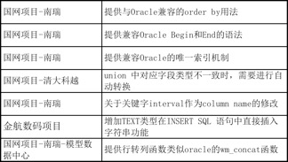
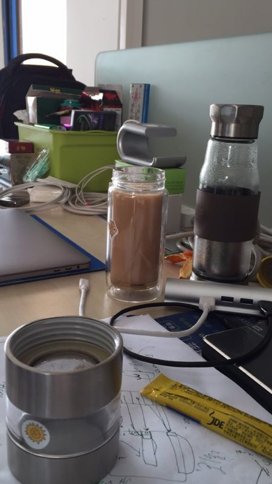
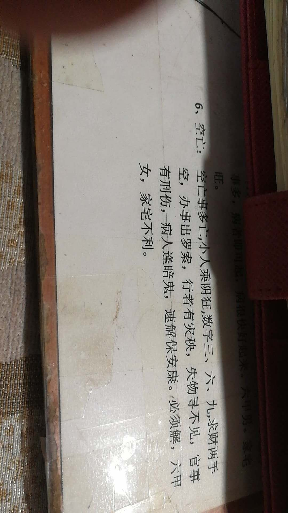

2017-12¶
2017-12-01¶
| 2017-12-01 09:28:11 | 我 | 有事吗 |
| 2017-12-01 09:28:31 | 你 | 还是王志的 |
| 2017-12-01 09:28:51 | 你 | 他说了半天，一点进展没有，我让他下来跟你单独汇报 |
| 2017-12-01 09:29:12 | 我 | 嗯嗯 |
| 2017-12-01 09:29:58 | 你 | g5不能延期，测试说可能有时间风险，研发说不能加其他任务了 |
| 2017-12-01 09:32:02 | 我 | 嗯 |
| 2017-12-01 09:32:48 | 你 | 我说可以，以后国网来新任务尽量排在下个版本 |
| 2017-12-01 09:33:22 | 我 | 是，应该不加了 |
| 2017-12-01 09:43:57 | 你 | 问题keduole |
| 2017-12-01 09:44:06 | 你 | 都说人力冲突 |
| 2017-12-01 09:49:23 | 我 | 嗯 |
| 2017-12-01 10:01:54 | 你 | 开完了 |
| 2017-12-01 10:02:18 | 我 | 啊，今天时间这么长 |
| 2017-12-01 10:02:24 | 你 | 我说要是人力冲突这么严重 咱们就等老王来了开这个会 反正这几个人什么都定不了 |
| 2017-12-01 10:02:28 | 你 | 他们就不说话了 |
| 2017-12-01 10:02:33 | 我 | 😄 |
| 2017-12-01 10:59:01 | 我 | 忙死我了😢 |
| 2017-12-01 10:59:06 | 你 | 嗯嗯 |
| 2017-12-01 10:59:08 | 你 | 我也很忙 |
| 2017-12-01 10:59:42 | 我 | 刚才你过来的时候，闻着你的香味，我都快醉了 |
| 2017-12-01 11:00:33 | 你 | 是 |
| 2017-12-01 11:00:37 | 你 | 有香味吗 |
| 2017-12-01 11:00:42 | 我 | 有呀 |
| 2017-12-01 13:33:50 | 你 | GBase 8t V8.5新特性及功能增强.doc |
| 2017-12-01 13:45:42 | 你 | 我刚才就是想问问你干嘛呢 |
| 2017-12-01 14:30:36 | 你 | 你是不是生我的气了 怪我刚才那么跟你说话 |
| 2017-12-01 14:31:10 | 我 | 亲，真的没有 |
| 2017-12-01 14:31:19 | 我 | 我在和老陈聊天 |
| 2017-12-01 14:31:22 | 你 | 聊吧 |
| 2017-12-01 14:31:26 | 我 | 真的没有生气 |
| 2017-12-01 14:32:19 | 你 | 好的 |
| 2017-12-01 14:32:21 | 你 | 你们聊吧 |
| 2017-12-01 14:32:52 | 我 | 亲，其实今天我还是很想你的 |
| 2017-12-01 14:33:00 | 你 | ？？？ |
| 2017-12-01 14:33:10 | 你 | 想我啥啊 |
| 2017-12-01 14:33:28 | 我 | 和你聊天呀 |
| 2017-12-01 15:41:07 | 我 | 和你说说吧 |
| 2017-12-01 15:41:12 | 我 | 太好玩了 |
| 2017-12-01 15:41:23 | 我 | 老陈以为王总不想合并了 |
| 2017-12-01 15:41:54 | 我 | 他看王总说不让外传，以为是王总退缩了 |
| 2017-12-01 15:42:10 | 你 | 然后呢 |
| 2017-12-01 15:42:27 | 我 | 我告诉他不是的，应该是赵总知道消息了，主要就是技术支持合并的事情 |
| 2017-12-01 15:42:43 | 我 | 后面我们又讨论了 L3的事情 |
| 2017-12-01 15:43:20 | 我 | 老陈不想要 L3，我是想留着，而且还想多加几个人 |
| 2017-12-01 15:43:32 | 我 | 我俩为这个争论半天 |
| 2017-12-01 15:46:07 | 我 | 不过最后他让我说服了 |
| 2017-12-01 15:46:15 | 你 | 哦 |
| 2017-12-01 15:46:33 | 你 | 话说这个架构 感觉王总被彻底架空了 |
| 2017-12-01 15:46:54 | 我 | 这个看怎么看了 |
| 2017-12-01 15:47:02 | 我 | 王总是想做大部门的领导 |
| 2017-12-01 15:47:09 | 你 | 哦 |
| 2017-12-01 15:48:52 | 我 | 咋了，亲 |
| 2017-12-01 15:48:54 | 你 | 唉 |
| 2017-12-01 15:49:07 | 你 | 爱怎么着怎么着吧 福祸相依 |
| 2017-12-01 15:49:17 | 我 | 嗯嗯 |
| 2017-12-01 15:49:27 | 我 | 你怎么啦，心情不好吗 |
| 2017-12-01 15:49:32 | 你 | 没有啊 |
| 2017-12-01 15:49:35 | 你 | 完全没有 |
| 2017-12-01 15:49:37 | 我 | 你今天怎么会认为我生气呀 |
| 2017-12-01 15:53:59 | 你 | 我看我一问你脸色不好 |
| 2017-12-01 15:54:35 | 我 | 啊，我有吗？当时我正在想新增功能的文档，可能脸比较僵硬吧 |
| 2017-12-01 15:54:46 | 你 | 不知道 |
| 2017-12-01 15:55:04 | 我 | 亲，这辈子我都不会和你生气 |
| 2017-12-01 15:56:18 | 我 | 今天看见你和阿娇说话的时候，突然就觉得你非常美 |
| 2017-12-01 15:56:40 | 我 | 当时我就有一种惊艳的感觉 |
| 2017-12-01 15:57:37 | 你 | 是吗 |
| 2017-12-01 15:57:41 | 你 | 你看我来着 |
| 2017-12-01 15:57:42 | 我 | 嗯嗯 |
| 2017-12-01 15:57:45 | 我 | 对呀 |
| 2017-12-01 15:57:51 | 你 | 我看你对着墙了 |
| 2017-12-01 15:57:53 | 你 | 哈哈 |
| 2017-12-01 15:58:08 | 我 | 哈哈，那是因为看着你我就忘了说啥了 |
| 2017-12-01 15:58:17 | 我 | 我艰难的转过去 |
| 2017-12-01 15:58:23 | 我 | 才知道自己该说啥 |
| 2017-12-01 15:58:24 | 你 | 好吧 |
| 2017-12-01 15:58:37 | 你 | 老陈找你就因为这个事 啊 |
| 2017-12-01 15:58:44 | 你 | 他怎么也这么八卦 |
| 2017-12-01 15:58:45 | 我 | 嗯嗯 |
| 2017-12-01 15:58:58 | 我 | 是 |
| 2017-12-01 15:59:09 | 你 | 关键他一直跟你八卦 |
| 2017-12-01 15:59:16 | 你 | 他是不是想把你拉进来 |
| 2017-12-01 16:35:13 | 你 | 你看王胜利刚才多乖 |
| 2017-12-01 16:35:22 | 我 | 哈哈，是呢 |
| 2017-12-01 16:35:25 | 你 | 要不是我帮他捋 他还乱着呢 |
| 2017-12-01 16:35:33 | 我 | 嗯嗯 |
| 2017-12-01 16:35:41 | 我 | 所以我相信你 |
| 2017-12-01 16:35:47 | 你 | 你刚才为啥过去 |
| 2017-12-01 16:35:59 | 你 | 我走的时候看着你 其实就是想让你过去跟我一起 |
| 2017-12-01 16:36:07 | 你 | 没想到你真来了 |
| 2017-12-01 16:36:09 | 我 | 嗯嗯，我知道 |
| 2017-12-01 16:36:20 | 我 | 我是发了一个邮件，然后就过去 |
| 2017-12-01 16:37:04 | 我 | 其实我过去更多是怕王胜利欺负你 |
| 2017-12-01 16:37:15 | 我 | 我看他那么乖，我就放心了 |
| 2017-12-01 16:37:28 | 你 | 我不是怕他欺负我 我是想他说一次 你明白了 我就不用再跟你说一遍了 |
| 2017-12-01 16:37:38 | 你 | 他晨会上都说不过我 |
| 2017-12-01 16:37:52 | 我 | 哈哈，你不用和我说，我相信你。 |
| 2017-12-01 16:37:57 | 你 | 那好吧 |
| 2017-12-01 16:38:04 | 我 | 以后这些事情你拿主意就行了 |
| 2017-12-01 16:38:10 | 你 | 行 |
| 2017-12-01 16:38:31 | 我 | 他们要是有刁难你的，你和我说，我去收拾他们 |
| 2017-12-01 16:38:37 | 你 | 好滴 哈哈 |
| 2017-12-01 16:38:40 | 你 | 哈哈 |
| 2017-12-01 17:45:39 | 我 | 干啥呢 |
| 2017-12-01 17:46:05 | 你 | 写软需呢 |
| 2017-12-01 17:46:11 | 你 | 汉字转拼音的 |
| 2017-12-01 17:46:14 | 我 | 嗯嗯 |
| 2017-12-01 17:46:22 | 我 | 今天几点下班 |
| 2017-12-01 17:46:36 | 你 | 我在等东东的回复 |
| 2017-12-01 17:46:50 | 你 | 他要是去永旺 去就六点下 |
| 2017-12-01 17:46:53 | 我 | 嗯，早点回去吧 |
| 2017-12-01 17:47:01 | 我 | 明天好好歇歇 |
| 2017-12-01 17:47:09 | 你 | 没事啦 歇过来了 |
| 2017-12-01 17:47:14 | 我 | 你今天的气色比昨天强好多 |
| 2017-12-01 17:47:19 | 你 | 我不写了 陪你聊天吧 |
| 2017-12-01 17:47:26 | 我 | 好呀好呀 |
| 2017-12-01 17:47:35 | 你 | 反正也没啥难度 就是工作量 |
| 2017-12-01 17:47:41 | 我 | 嗯嗯 |
| 2017-12-01 17:47:55 | 你 | 你们DB4测试的怎么样了 |
| 2017-12-01 17:48:12 | 我 | 还没开始呢，还有一些开发工作 |
| 2017-12-01 17:48:22 | 我 | 说实话压力挺大的 |
| 2017-12-01 17:48:31 | 我 | 现在我让旭明盯着呢 |
| 2017-12-01 17:48:48 | 我 | 旭明应该还能顶着住 |
| 2017-12-01 17:49:13 | 你 | 那就好 |
| 2017-12-01 17:49:22 | 你 | 我看你挺紧张那边的 |
| 2017-12-01 17:49:27 | 我 | 是 |
| 2017-12-01 17:49:33 | 我 | 这件事现在太乱了 |
| 2017-12-01 17:49:46 | 我 | 我觉得销售骗赵总了 |
| 2017-12-01 17:50:00 | 你 | 你连着打去不去不 你看看你打几个会出错 |
| 2017-12-01 17:50:10 | 我 | 说和客户关系很好，其实根本就没有那么好 |
| 2017-12-01 17:50:40 | 你 | 你打完直接发给我 |
| 2017-12-01 17:50:41 | 我 | 好像没有错 |
| 2017-12-01 17:50:45 | 你 | 啊？ |
| 2017-12-01 17:50:49 | 你 | 去不去去不去 |
| 2017-12-01 17:50:53 | 你 | 你看我打的 |
| 2017-12-01 17:50:59 | 我 | 去不去不去不去不去不去不去不去不去不去不 |
| 2017-12-01 17:51:02 | 你 | 去不去去不去全部去不去 |
| 2017-12-01 17:51:06 | 你 | 你别过脑子 |
| 2017-12-01 17:51:07 | 我 | 哈哈 |
| 2017-12-01 17:51:08 | 你 | 直接打 |
| 2017-12-01 17:51:24 | 我 | 是呀，这种机械的操作我绝对没有问题 |
| 2017-12-01 17:51:37 | 我 | 反而是打各种字才会容易出错 |
| 2017-12-01 17:55:16 | 我 | 哈哈，我刚才试了，要是特意去想反而错的多，从第三个字就开始错了 |
| 2017-12-01 17:55:35 | 你 | 你打给我啊 |
| 2017-12-01 17:55:39 | 你 | 你说的我不信 |
| 2017-12-01 17:55:44 | 我 | 去吧去吧去吧去 |
2017-12-04¶
| 2017-12-04 09:01:21 | 我 | 靴子很漂亮 |
| 2017-12-04 09:01:49 | 你 | 早[调皮] |
| 2017-12-04 09:02:14 | 我 | 早 |
| 2017-12-04 09:16:54 | 你 | 王志 直接把邮件发给武总 赵总了都 |
| 2017-12-04 09:16:56 | 你 | 哈哈 |
| 2017-12-04 09:16:58 | 你 | 笑死我了 |
| 2017-12-04 09:17:03 | 我 | 是 |
| 2017-12-04 09:43:07 | 你 | 老实了 |
| 2017-12-04 09:43:16 | 我 | 哈哈 |
| 2017-12-04 10:05:25 | 我 | 亲，你今天做一下1.6.6和国网 G6的发版内容吧 |
| 2017-12-04 10:05:31 | 我 | 别让高杰知道 |
| 2017-12-04 10:05:35 | 你 | 好 |
| 2017-12-04 10:05:43 | 你 | 嗯嗯 知道 |
| 2017-12-04 10:05:49 | 你 | 只做需求的啊 |
| 2017-12-04 10:05:54 | 我 | 是 |
| 2017-12-04 10:05:56 | 你 | 我写拼音的那个需求呢 |
| 2017-12-04 10:06:08 | 我 | 嗯嗯 |
| 2017-12-04 10:06:29 | 你 | 一会10：30需求评审 limit offset的 |
| 2017-12-04 10:59:40 | 你 | 你干啥呢 |
| 2017-12-04 11:00:01 | 我 | 处理各种问题 |
| 2017-12-04 11:00:06 | 你 | 忙吧 |
| 2017-12-04 11:00:10 | 你 | 嘻嘻 |
| 2017-12-04 11:00:11 | 我 | 你爸怎么样了 |
| 2017-12-04 11:00:26 | 你 | 没事了 还在icu观察 |
| 2017-12-04 11:04:30 | 你 | 你看看是这个表吗？我新增了一列 写的是咱们需求的状态 |
| 2017-12-04 11:04:36 | 你 | 收邮件 |
| 2017-12-04 11:04:43 | 我 | 嗯嗯，收到了 |
| 2017-12-04 11:05:18 | 你 | 后边空着的 都是非咱们的 |
| 2017-12-04 11:06:27 | 我 | 你帮我做个汇总吧，总共多少个，解决了多少个，还剩几个要做，delay几个 |
| 2017-12-04 11:06:40 | 你 | 好 |
| 2017-12-04 11:06:44 | 你 | 稍等 马上做 |
| 2017-12-04 11:10:13 | 你 | 共计需求39个 已解决：15个 delay：1个 进行中：6个 已反馈：3个 非8t：14个 |
| 2017-12-04 11:11:53 | 你 | 『已反馈』和『进行中』都是待发版 都在做呢，共计9个 |
| 2017-12-04 11:12:27 | 你 | delay的1个是他状态写错了 |
| 2017-12-04 11:13:26 | 我 | 👌 |
| 2017-12-04 11:15:51 | 你 | 他没有统计delay的 所以不能给你提供『还剩几个要做』 |
| 2017-12-04 11:16:15 | 我 | 好的，谢谢 |
| 2017-12-04 11:16:18 | 你 | 也就是要么我们都做了 要么都在做 没有欠帐的 |
| 2017-12-04 11:16:30 | 我 | 嗯嗯 |
| 2017-12-04 11:16:32 | 你 | 你要是这么客气 下次找别人统计吧 |
| 2017-12-04 11:16:50 | 我 | 😄，好吧，不和你客气了 |
| 2017-12-04 11:47:35 | 我 | 开完了，后面没说需求，说下午开会再讨论 |
| 2017-12-04 12:09:20 | 你 | 你看下我给金航数码回复的邮件可以吗 |
| 2017-12-04 12:10:03 | 我 | 嗯，我看看 |
| 2017-12-04 12:10:55 | 我 | 可以，写得挺好的 |
| 2017-12-04 12:11:14 | 你 | 那就好 |
| 2017-12-04 12:11:20 | 你 | 我怕你不乐意发内测版 |
| 2017-12-04 12:12:06 | 我 | 没事的，我现在相信你，你说能发就能发[呲牙] |
| 2017-12-04 12:12:27 | 你 | 嗯嗯 可以发 |
| 2017-12-04 12:12:28 | 你 | 哈哈 |
| 2017-12-04 13:47:02 | 你 | 还行吗 发给你的 |
| 2017-12-04 13:47:13 | 我 | 非常好 |
| 2017-12-04 13:47:23 | 你 | 你以后别老夸我了 |
| 2017-12-04 13:47:29 | 你 | 实话实说就行啊 |
| 2017-12-04 13:47:41 | 我 | 要是王志能做到你这样我就省心了 |
| 2017-12-04 13:47:51 | 你 | 他才不做这些呢 |
| 2017-12-04 13:47:52 | 我 | 我说的就是实话呀 |
| 2017-12-04 13:48:05 | 你 | 他有那时间 还想跟领导套近乎呢 |
| 2017-12-04 13:48:26 | 我 | 是，就是一个不务正业 |
| 2017-12-04 13:48:36 | 你 | 不说他了 |
| 2017-12-04 13:48:52 | 你 | 今早上我看你问他问题 我觉得太出气了 |
| 2017-12-04 13:49:00 | 我 | 关键是咱俩心有灵犀 |
| 2017-12-04 13:49:02 | 你 | 他就欠 |
| 2017-12-04 13:49:05 | 你 | 是 |
| 2017-12-04 13:49:14 | 我 | 你给我的就是我想要的 |
| 2017-12-04 13:49:24 | 你 | 是？ |
| 2017-12-04 13:49:32 | 你 | 那就好那就好 |
| 2017-12-04 13:49:43 | 我 | 😄 |
| 2017-12-04 13:51:27 | 我 | 你现在这个 再加上现场着急要的问题 还有研发要解决的内部bug 就是我们的版本规划了 |
| 2017-12-04 13:51:47 | 你 | 是 |
| 2017-12-04 14:45:05 | 你 | 大家都被老杨搞晕了 |
| 2017-12-04 14:45:28 | 我 | 嗯嗯 |
| 2017-12-04 16:25:02 | 我 | 老杨说的就先这样，别理他。明年部门调整以后还不知道啥样呢 |
| 2017-12-04 16:25:17 | 你 | 恩 |
| 2017-12-04 16:25:19 | 你 | 没事了 |
| 2017-12-04 16:25:25 | 你 | 反正他说他的 我做我的 |
| 2017-12-04 16:25:30 | 我 | 嗯嗯 |
| 2017-12-04 17:34:33 | 我 | [链接] 分享自 数据观 |
| 2017-12-04 17:34:34 | 我 | 你看看这个，别声张 |
| 2017-12-04 17:46:40 | 你 | 需求我写完了 |
| 2017-12-04 17:47:20 | 你 | 现在按照版本计划来的话 就差text字段支持like和insert的软需要写了 |
| 2017-12-04 17:47:51 | 我 | 👍 |
| 2017-12-04 18:02:49 | 我 | 你是不是有了？ |
| 2017-12-04 18:04:44 | 你 | 没有吧 |
| 2017-12-04 18:11:15 | 你 | 你干啥去了 |
2017-12-05¶
| 2017-12-05 08:58:05 | 你 | 早 |
| 2017-12-05 08:58:24 | 我 | 嗯嗯，你是不是有点着凉了 |
| 2017-12-05 08:58:30 | 你 | 没有啊 |
| 2017-12-05 08:58:32 | 你 | 怎么了 |
| 2017-12-05 08:58:42 | 我 | 没事，担心你 |
| 2017-12-05 08:58:47 | 你 | 今早上开车 差点出事 |
| 2017-12-05 08:58:51 | 你 | 吓着了 |
| 2017-12-05 08:58:53 | 我 | 啊 |
| 2017-12-05 08:59:06 | 你 | 不知道咋了 |
| 2017-12-05 08:59:14 | 我 | 嗯嗯，没事就好 |
| 2017-12-05 08:59:16 | 你 | 差点 不过也没处 |
| 2017-12-05 08:59:17 | 你 | 出 |
| 2017-12-05 08:59:37 | 我 | 嗯嗯 |
| 2017-12-05 08:59:52 | 你 | 启动CDC刚开始的时候，由于数据库进程资源充裕，每张表的cdc_set_fullrowlogging操作消耗时间很短（10毫秒以下）。随后由于资源的不断消耗导致每张表的消耗时间变长，最长达2百多毫秒。 |
| 2017-12-05 09:00:29 | 你 | 这个问题没治了吗 |
| 2017-12-05 09:08:21 | 我 | 咋了，亲 |
| 2017-12-05 09:09:02 | 我 | 是因为开车吓到了吗 |
| 2017-12-05 09:09:30 | 你 | 没有 我想我爸爸了 |
| 2017-12-05 09:09:36 | 我 | 嗯 |
| 2017-12-05 09:09:57 | 我 | 出 ICU 了吗 |
| 2017-12-05 09:10:27 | 你 | 没呢 |
| 2017-12-05 09:10:58 | 我 | 还有指标不正常吗 |
| 2017-12-05 09:11:12 | 你 | 应该是没有了 |
| 2017-12-05 09:11:17 | 你 | 我也不是很清楚 |
| 2017-12-05 09:11:21 | 我 | 嗯 |
| 2017-12-05 09:11:48 | 我 | 没事的，没啥变化就是好事 |
| 2017-12-05 09:12:08 | 我 | 现在可以下床了吗 |
| 2017-12-05 09:12:15 | 你 | 不可以 |
| 2017-12-05 09:12:31 | 你 | 我没事 |
| 2017-12-05 09:12:42 | 你 | 就是想起了 挺难受的 |
| 2017-12-05 09:12:48 | 我 | 嗯 |
| 2017-12-05 10:25:09 | 我 | 太要命了 |
| 2017-12-05 10:25:23 | 我 | 这都听不明白 |
| 2017-12-05 10:29:24 | 你 | 是呢 |
| 2017-12-05 10:29:55 | 你 | 刚才丽颖和你太好玩了 |
| 2017-12-05 10:29:58 | 你 | 哈哈 |
| 2017-12-05 10:30:06 | 我 | 怎么好玩了 |
| 2017-12-05 10:30:29 | 你 | 待会说 |
| 2017-12-05 10:30:39 | 我 | 恩 |
| 2017-12-05 10:34:57 | 我 | 王总就不听这边说什么 |
| 2017-12-05 10:35:19 | 我 | 老是各说各话 |
| 2017-12-05 11:27:01 | 我 | [链接] 王雪松和李迎的聊天记录 |
| 2017-12-05 16:29:15 | 我 | 你看，DDL 这事高杰还想掺和 |
| 2017-12-05 16:29:29 | 我 | 你一说完他就说出大事了 |
| 2017-12-05 16:29:33 | 你 | 哈哈 |
| 2017-12-05 16:29:51 | 我 | 然后还说现在是4点，就是想立刻给王总发微信呢 |
| 2017-12-05 16:30:38 | 你 | 是吧 |
| 2017-12-05 16:30:48 | 你 | 没准就先说了呢 |
| 2017-12-05 16:31:25 | 我 | 无所谓了，反正他也不知道什么信息，以后这些事情一定要对他做信息封锁 |
| 2017-12-05 16:31:33 | 你 | 好的 |
| 2017-12-05 16:52:00 | 你 | :rt:`王总，252#SDS发生切换后CM重连恢复时间过长问题汇报如下： 1、背景：
2、提炼需求：在不需要人为干预的情况下，发生sds切换时，rtsync启动时间降到分钟级。 3、对项目的影响：该问题影响出厂测试，要求在1月15号解决。目前，DTD没有给出承诺。 4、下一步计划：尽快启动问题评估，如果不能在1月15号解决，尽快告知一线。` |
| 2017-12-05 16:55:50 | 你 | 看这么写清楚吗 |
| 2017-12-05 16:56:01 | 我 | 嗯嗯，我看看 |
| 2017-12-05 16:57:52 | 我 | 因此，该问题不是主切备、备切主的使用问题，而是主切备时rtsync启动太慢，导致目标端应用暂停问题。 改成 “ 因此，该问题不是主切备、备切主的使用问题，而是主切备时rtsync启动太慢，导致目标端应用暂停问题。同时用户不接受人工执行预热脚本的方式 ” |
| 2017-12-05 16:58:11 | 你 | 好的 |
| 2017-12-05 16:59:20 | 你 | 别的不改了吧 |
| 2017-12-05 16:59:24 | 你 | 我发了啊 |
| 2017-12-05 16:59:30 | 我 | 嗯，不改了 |
| 2017-12-05 17:00:05 | 你 | 我今天打球 |
| 2017-12-05 17:00:13 | 我 | 嗯嗯 |
| 2017-12-05 17:21:08 | 我 | 咋了 |
| 2017-12-05 17:29:33 | 你 | 我爸爸的病情 你别问了 我不想说 |
| 2017-12-05 17:29:44 | 我 | 啊 |
| 2017-12-05 17:29:47 | 我 | 好吧 |
| 2017-12-05 17:59:46 | 我 | 呵呵，你看高杰，考勤这事他就想把着 |
2017-12-06¶
| 2017-12-06 09:52:18 | 我 | 你去哪了 |
| 2017-12-06 09:53:32 | 你 | 马上回 |
| 2017-12-06 09:53:45 | 我 | 我没事，不急 |
| 2017-12-06 09:56:37 | 你 | 回来了 |
| 2017-12-06 09:56:43 | 你 | 有事吗 |
| 2017-12-06 10:22:44 | 我 | 你去王总屋里歇会吧 |
| 2017-12-06 10:22:53 | 你 | 我没事 |
| 2017-12-06 10:22:57 | 你 | 你别注意我了 |
| 2017-12-06 10:23:03 | 你 | 我不希望你注意我 |
| 2017-12-06 10:23:12 | 我 | 嗯嗯 |
| 2017-12-06 10:23:17 | 你 | 给我点空间 |
| 2017-12-06 10:23:32 | 你 | 就像以前一样 别让我觉得我特殊就行 |
| 2017-12-06 10:23:37 | 我 | 嗯嗯 |
| 2017-12-06 10:23:43 | 你 | 我要是受不了 会说的 |
| 2017-12-06 10:23:51 | 你 | 就是别搭理我 |
| 2017-12-06 10:24:02 | 你 | 等着我想说的时候跟你说 |
| 2017-12-06 10:24:04 | 你 | 别搭理我 |
| 2017-12-06 10:24:07 | 我 | 嗯嗯 |
| 2017-12-06 11:02:39 | 你 | 俊旗总， 目前我们的技术方案是DTD部门负责写一个小工具，读逻辑日志。然后把DML、DDL需要的数据以rtsync能解析的方式吐给rtsync，rtsync负责把数据转换成sql语句，整个过程与CDC无关，不存在您担心的『PICC之前用过CDC, CDC在HDR环境下只能解析Primary Server上的逻辑日志，这是PICC不容许的；所以我们的RTSync方案也不能满足PICC要求；』问题。 另外，跟您再次确认项目时间：12月底DTD提供可联调版本给工具部，1月份两个部门进行紧密联调，2月底（2月28日）由工具部发货。该项目计划涉及两个部门，如有变动，需要两个部门同时协调，因此，任何情况都请尽快通知，以免影响项目推进。多谢！ |
| 2017-12-06 11:02:49 | 你 | 看下我给李俊旗回复的邮件 合适不 |
| 2017-12-06 11:06:04 | 我 | 前面这一段这么写太啰嗦了 |
| 2017-12-06 11:06:10 | 你 | 是吧 |
| 2017-12-06 11:06:18 | 我 | 我给你想想 |
| 2017-12-06 11:06:30 | 你 | 把那个中括号引用的删掉 |
| 2017-12-06 11:06:41 | 你 | 目前我们的技术方案是DTD部门负责写一个小工具，读逻辑日志。然后把DML、DDL需要的数据以rtsync能解析的方式吐给rtsync，rtsync负责把数据转换成sql语句，整个过程与CDC无关，不存在您担心的问题。 |
| 2017-12-06 11:06:48 | 你 | 这么写呢 |
| 2017-12-06 11:07:04 | 你 | 咱们最后是由工具部发货吗 |
| 2017-12-06 11:07:54 | 我 | 目前的方案就是在备节点上通过读取逻辑日志并解析出相关语句的信息，利用 RTSync 现有的生成 SQL 的功能生成对应的 DDL 和 DML 语句进行同步 |
| 2017-12-06 11:08:11 | 我 | 最后是工具部发货 |
| 2017-12-06 11:08:53 | 你 | 整个过程与CDC无关。 |
| 2017-12-06 11:08:56 | 你 | 加一句这个 |
| 2017-12-06 11:09:02 | 你 | 让他知道没CDC的事 |
| 2017-12-06 11:09:56 | 我 | 👌 |
| 2017-12-06 11:10:15 | 你 | 那我发了啊 |
| 2017-12-06 11:10:22 | 我 | 发吧 |
| 2017-12-06 13:31:48 | 我 | 你睡好了吗 |
| 2017-12-06 13:32:01 | 你 | 还行吧 昏昏沉沉的 |
| 2017-12-06 13:32:12 | 我 | 是我把你吵醒吧 |
| 2017-12-06 13:32:33 | 你 | 没有 |
| 2017-12-06 13:32:41 | 你 | 你之前我就醒了 |
| 2017-12-06 13:32:51 | 我 | 嗯 |
| 2017-12-06 13:47:06 | 我 | [链接] 王雪松和Yunming的聊天记录 |
| 2017-12-06 14:36:31 | 我 | 评审完了？ |
| 2017-12-06 14:36:47 | 你 | 嗯嗯 |
| 2017-12-06 14:36:49 | 你 | 没问题 |
| 2017-12-06 14:37:03 | 我 | 👌 |
| 2017-12-06 14:37:47 | 我 | 8m他们测了高配服务器，性能线性提升 |
| 2017-12-06 14:37:55 | 你 | 是吧 |
| 2017-12-06 14:38:06 | 你 | 明年真的没准没有8t了 |
| 2017-12-06 14:38:48 | 我 | 唉，明年我觉得应该还有，到后年要是还是这样就悬了 |
| 2017-12-06 14:41:40 | 你 | 恩 |
| 2017-12-06 14:42:02 | 你 | 252那个问题 你拉着老田说的时候叫上我 我看晓亮怎么说 |
| 2017-12-06 14:42:18 | 我 | 嗯嗯 |
| 2017-12-06 14:49:41 | 我 | 国网五期做了什么需求 |
| 2017-12-06 14:51:25 | 你 | 1、空字符使用is (not)null查询 2、兼容Oracle || 操作符对null值的处理为空字符串 3、rownum性能提升 4、sds备节点支持db.tb 5、大小写支持informix原有行为 |
| 2017-12-06 15:07:05 | 我 | 讲完了 |
| 2017-12-06 15:07:38 | 你 | 嗯嗯 |
| 2017-12-06 15:09:57 | 我 | DMD集群组87人单机组32人 |
| 2017-12-06 15:10:14 | 我 | 咱们一个部门只是人家一个组 |
| 2017-12-06 15:10:22 | 你 | 哈哈 |
| 2017-12-06 15:10:23 | 你 | 是 |
| 2017-12-06 15:10:29 | 你 | 谁能跟8a比啊 |
| 2017-12-06 15:11:51 | 我 | 唉 |
| 2017-12-06 15:14:34 | 我 | 最近我接连受到打击，负能量高高的 |
| 2017-12-06 15:15:24 | 你 | 为啥啊 什么打击你了 |
| 2017-12-06 15:15:29 | 你 | 部门的事么 |
| 2017-12-06 15:15:54 | 我 | 是，主要就是这些内幕 |
| 2017-12-06 15:16:19 | 你 | 什么打击你了？赵总的手段吗？ |
| 2017-12-06 15:16:22 | 我 | 再看看下面这些不争气的家伙 |
| 2017-12-06 15:16:33 | 我 | 感觉不到希望 |
| 2017-12-06 15:16:43 | 我 | 不是手段 |
| 2017-12-06 15:16:52 | 你 | 唉 |
| 2017-12-06 15:17:03 | 我 | 是势 大势 |
| 2017-12-06 15:17:08 | 你 | 王总也有责任啊 |
| 2017-12-06 15:17:19 | 我 | 是 |
| 2017-12-06 15:17:37 | 你 | 『大势』打击你了 |
| 2017-12-06 15:17:59 | 我 | 嗯嗯 |
| 2017-12-06 15:18:11 | 我 | 心有余力不足 |
| 2017-12-06 15:18:33 | 我 | 现在又就你一个人能给我带来正能量了[呲牙] |
| 2017-12-06 15:18:55 | 你 | 我有点不明白 |
| 2017-12-06 15:19:15 | 我 | 哪不明白 |
| 2017-12-06 15:19:17 | 你 | 是因为 你现在大方向上看不大希望了 吗 |
| 2017-12-06 15:19:29 | 你 | 还是说下边人不争气呢 |
| 2017-12-06 15:19:48 | 你 | 我觉得关键还是你在这个部门不能说话算 |
| 2017-12-06 15:19:56 | 你 | 王总是个始乱终弃的小人 |
| 2017-12-06 15:20:01 | 我 | 是身边的人不争气，包括王总 |
| 2017-12-06 15:20:20 | 我 | 把大好机会眼睁睁的给浪费了 |
| 2017-12-06 15:20:21 | 你 | 是 |
| 2017-12-06 15:20:29 | 你 | 是啊 |
| 2017-12-06 15:20:34 | 你 | 这我就明白了 |
| 2017-12-06 15:20:57 | 你 | 关键这个人始乱终弃 不可信任 不可托付 |
| 2017-12-06 15:21:11 | 你 | 否则他要是刘备 做他的诸葛亮也没啥 |
| 2017-12-06 15:21:12 | 我 | 没错 |
| 2017-12-06 15:24:12 | 你 | 现在看这个部门特别滑稽 |
| 2017-12-06 15:24:27 | 我 | 嗯嗯 说说 |
| 2017-12-06 15:25:42 | 你 | 你看 现在大家越来越唯你的命是从了 你又有能力，理论上没有王总你都可以把部门带好， 可是王总却不信任你 你有能力也不能使 |
| 2017-12-06 15:26:07 | 我 | 是 |
| 2017-12-06 15:26:47 | 你 | 使多了 会有人觉得 你拎不清抓不准位置 使少了 眼看部门又崩了 |
| 2017-12-06 15:27:10 | 你 | 那个王总时不时的冒一句有的没的 |
| 2017-12-06 15:27:37 | 你 | 我现在是一点不想管这破烂事 |
| 2017-12-06 15:27:58 | 你 | 反正管了王总也看不到 |
| 2017-12-06 15:28:05 | 我 | 是呢，我现在也不想管 |
| 2017-12-06 15:28:08 | 你 | 跟着这样的领导 就是会觉得没劲 |
| 2017-12-06 15:29:09 | 我 | 将熊熊一窝 |
| 2017-12-06 15:29:19 | 你 | 是 |
| 2017-12-06 15:44:04 | 我 | 困死了 |
| 2017-12-06 15:44:25 | 你 | 眯会 |
| 2017-12-06 15:45:00 | 我 | 嗯嗯 刚才已经睡着了[擦汗] |
| 2017-12-06 17:11:21 | 你 | 在哪呢 |
| 2017-12-06 17:11:58 | 我 | 抽烟 |
| 2017-12-06 17:12:14 | 你 | 你一会上来吧 我跟你说说我爸爸的情况 我的请假 |
| 2017-12-06 17:12:26 | 我 | 嗯 |
| 2017-12-06 17:38:42 | 你 | 李杰已经崩溃了 |
| 2017-12-06 17:38:47 | 我 | 啊 |
| 2017-12-06 17:39:12 | 我 | 他现在还在哺乳，这种精神状态不好 |
| 2017-12-06 17:39:24 | 我 | 你一定得坚强 |
| 2017-12-06 17:39:30 | 你 | 我也是一直劝她 |
| 2017-12-06 17:39:35 | 我 | 嗯嗯 |
| 2017-12-06 17:39:47 | 你 | 我也坚持不了很久 |
| 2017-12-06 17:40:03 | 你 | 我也不想把这种情绪待在工作中 影响你和别人 |
| 2017-12-06 17:40:08 | 我 | 可惜我帮不上什么忙 |
| 2017-12-06 17:40:13 | 我 | 只能干着急 |
| 2017-12-06 17:40:15 | 你 | 不用你帮忙 |
| 2017-12-06 17:40:17 | 你 | 别着急 |
| 2017-12-06 17:40:30 | 你 | 谁都帮不了 |
| 2017-12-06 17:40:39 | 你 | 其实东东也帮不了什么 |
| 2017-12-06 17:40:51 | 你 | 这些都是来自我和李杰内心的 |
| 2017-12-06 17:40:55 | 我 | 是 |
| 2017-12-06 17:40:56 | 你 | 谁也代替不了 |
| 2017-12-06 17:41:00 | 你 | 谁也说不进去 |
| 2017-12-06 17:41:06 | 我 | 嗯 |
| 2017-12-06 17:47:23 | 你 | 老王 对不起 害你这么担心我 |
| 2017-12-06 17:47:29 | 我 | 不要这么说 |
| 2017-12-06 17:47:33 | 你 | 你别担心我了 就当我不存在 |
| 2017-12-06 17:47:44 | 你 | 我不希望因为我影响你的情绪 |
| 2017-12-06 17:47:47 | 我 | 嗯嗯 |
| 2017-12-06 17:47:50 | 我 | 我没事的 |
| 2017-12-06 17:47:51 | 你 | 请不要关注我 |
| 2017-12-06 17:47:59 | 我 | 我很坚强😁 |
| 2017-12-06 17:48:06 | 你 | 嗯嗯 |
| 2017-12-06 17:48:08 | 你 | 那就好 |
| 2017-12-06 19:49:40 | 你 | ENCRYPT.docx |
2017-12-07¶
| 2017-12-07 08:55:38 | 你 | 记得更新rd，按照assigned筛选李辉，都过一遍就可以，没多少应该，让他们把加解密函数的状态重置下 |
| 2017-12-07 08:55:42 | 你 | 别回了 |
| 2017-12-07 08:56:05 | 你 | 明天让王志发问题进展表给爱福吧 |
2017-12-09¶
| 2017-12-09 19:02:01 | 你 | 在吗？ |
| 2017-12-09 19:02:15 | 我 | 在 |
| 2017-12-09 19:02:18 | 你 | 我爸爸今天又开始发烧了，38度 |
| 2017-12-09 19:02:26 | 我 | 啊 |
| 2017-12-09 19:02:36 | 你 | 大夫说各种病毒，此起彼伏 |
| 2017-12-09 19:02:44 | 我 | 还是抵抗力太弱了 |
| 2017-12-09 19:02:55 | 你 | 肺感染，尿路感染 |
| 2017-12-09 19:03:09 | 你 | 还好没有发现致命的病毒 |
| 2017-12-09 19:03:17 | 我 | 还好 |
| 2017-12-09 19:03:31 | 你 | 我看清单用了很多抗生素 |
| 2017-12-09 19:04:01 | 你 | 今天检查了心，肾，肝，甚至还有艾滋病毒 |
| 2017-12-09 19:04:05 | 你 | 真晕 |
| 2017-12-09 19:04:32 | 我 | 唉，身体弱，就怕感染 |
| 2017-12-09 19:04:59 | 你 | 血糖还是高 |
| 2017-12-09 19:05:42 | 你 | 今天问了转院的情况，大夫说转院也不行 |
| 2017-12-09 19:06:04 | 我 | 为啥不行呀 |
| 2017-12-09 19:07:34 | 你 | 就说到市里也是这么治疗，可能药效好些，但没有质的变化 |
| 2017-12-09 19:07:59 | 你 | 说他吞咽功能不可能复原了， |
| 2017-12-09 19:08:11 | 你 | 永远都是这样 |
| 2017-12-09 19:08:23 | 我 | 啊 |
| 2017-12-09 19:08:42 | 我 | 不是有康复好的吗 |
| 2017-12-09 19:09:50 | 你 | 说上次做核磁时时间有点早，这次做ct，说栓的更厉害了 |
| 2017-12-09 19:10:03 | 你 | 栓的是脑干 |
| 2017-12-09 19:10:20 | 我 | 哦，溶栓没起作用？ |
| 2017-12-09 19:10:42 | 你 | meiyou |
| 2017-12-09 19:11:24 | 你 | 说送医不及时，错过了3小时的溶栓时间 |
| 2017-12-09 19:11:48 | 你 | 怎么说脑干血管栓的是不可逆转的 |
| 2017-12-09 19:12:20 | 你 | 我前天都做了不好的打算了，可是昨天看着状态很好，今天又烧起来了 |
| 2017-12-09 19:12:38 | 你 | 今天我妈妈探视，说特别没精神 |
| 2017-12-09 19:13:11 | 我 | 还是太虚了 |
| 2017-12-09 19:13:31 | 你 | 嗯 |
| 2017-12-09 19:14:05 | 我 | 这次能控制住就应该没事了 |
| 2017-12-09 19:14:45 | 你 | 大夫肯定是血糖高，发烧的状态不给切气管，说切了以后观察几天就能转到普通病房 |
| 2017-12-09 19:15:08 | 你 | 就他这状态，我特别怕做完手术以后更坏 |
| 2017-12-09 19:16:02 | 你 | Icu里比普通病房肯定更干净吧，普通病房那得多容易感染啊 |
| 2017-12-09 19:16:13 | 我 | 是 |
| 2017-12-09 19:16:58 | 我 | 你怎么样 |
| 2017-12-09 19:17:12 | 你 | 我没事 |
| 2017-12-09 19:17:19 | 你 | 就跟上班一样 |
| 2017-12-09 19:17:43 | 你 | 晚上住在李杰她婆婆这，跟李杰和宝宝一起 |
| 2017-12-09 19:17:46 | 你 | 挺好的 |
| 2017-12-09 19:17:52 | 你 | 白天去医院 |
| 2017-12-09 19:17:55 | 我 | 嗯嗯 |
| 2017-12-09 19:18:48 | 我 | 注意别上火 |
| 2017-12-09 19:18:53 | 你 | 是 |
| 2017-12-09 19:18:58 | 你 | 吃的也不错 |
| 2017-12-09 19:19:33 | 你 | 我这几天心里就像过山车一样 |
| 2017-12-09 19:19:51 | 我 | 是 |
| 2017-12-09 19:20:32 | 我 | 病情不稳定，总是很揪心 |
| 2017-12-09 19:21:03 | 你 | 我爸爸不好，心里揪得慌，转好了，想想后期的护理工作又很重，而且我爸爸他也没什么生活质量可言，又担心 |
| 2017-12-09 19:21:12 | 你 | 家人也都是这样 |
| 2017-12-09 19:21:52 | 你 | 我姑姑们天天过山车 |
| 2017-12-09 19:21:57 | 我 | 是，慢慢来吧，肯定都能过去 |
| 2017-12-09 19:22:00 | 我 | 嗯嗯 |
| 2017-12-09 19:22:55 | 你 | 我上次看他，特别能感受到他求生的欲望，所以过多少钱都给他治，而且他还年轻，盼着他好转 |
| 2017-12-09 19:23:10 | 我 | 嗯嗯，肯定的 |
| 2017-12-09 19:23:15 | 你 | 现在就放弃，我自己这关都过不了 |
| 2017-12-09 19:23:22 | 我 | 不能放弃呀 |
| 2017-12-09 19:23:27 | 你 | 我得遗憾一辈子 |
| 2017-12-09 19:23:39 | 我 | 他的情况也没到放弃的时候 |
| 2017-12-09 19:23:49 | 你 | 是 |
| 2017-12-09 19:24:02 | 我 | 肯定能好的 |
| 2017-12-09 19:24:35 | 你 | 从我们经济条件，人力条件方面考虑，也没到时候，我们肯定给他治 |
| 2017-12-09 19:25:01 | 你 | 就看他自己争不争气了 |
| 2017-12-09 19:25:12 | 我 | 现在关键就是要渡过感染期 |
| 2017-12-09 19:25:41 | 你 | 感染是一段时间是吗？ |
| 2017-12-09 19:25:45 | 我 | 等身体抵抗力强了，就可以安排手术了 |
| 2017-12-09 19:25:51 | 我 | 是 |
| 2017-12-09 19:25:52 | 你 | 就是一个时间窗口 |
| 2017-12-09 19:26:01 | 你 | 过了这段时间就没事了对吗 |
| 2017-12-09 19:26:16 | 我 | 现在人发烧就是和病毒做斗争 |
| 2017-12-09 19:26:21 | 我 | 是的 |
| 2017-12-09 19:26:22 | 你 | 我知道 |
| 2017-12-09 19:26:51 | 我 | 看他的身体情况，弱就会久一点 |
| 2017-12-09 19:27:05 | 我 | 肯定能过去 |
| 2017-12-09 19:27:06 | 你 | 现在医生一直用抗生素，说他高糖的环境，特别适合病毒生存 |
| 2017-12-09 19:27:12 | 我 | 是的 |
| 2017-12-09 19:27:33 | 你 | 昨天杀了一个，今天又来了一个 |
| 2017-12-09 19:28:17 | 你 | 接着看吧，我一定等到他做了手术才能回去 |
| 2017-12-09 19:28:37 | 你 | 时间说不好了 |
| 2017-12-09 19:28:39 | 我 | 嗯嗯 |
| 2017-12-09 19:28:43 | 我 | 没事的 |
| 2017-12-09 19:29:04 | 我 | 每天都得验血吧 |
| 2017-12-09 19:35:16 | 你 | 嗯，今天肝肾心血尿验了好多 |
| 2017-12-09 19:36:28 | 我 | 嗯嗯，等血象下来了就好了 |
2017-12-11¶
| 2017-12-11 12:19:39 | 你 | 我爸爸做气切手术了，状态还不错 |
| 2017-12-11 12:19:53 | 你 | 你那个工时利用率是怎么统计的？ |
| 2017-12-11 12:20:06 | 我 | 真好 |
| 2017-12-11 12:20:49 | 我 | 按照北森的记录 |
| 2017-12-11 12:21:11 | 我 | 请假按0算 |
| 2017-12-11 12:21:41 | 你 | 好 |
| 2017-12-11 14:09:48 | 你 | 我下周估计回不去，加解密函数的需求怎么办？我回去做的话耽误进度吗？ |
| 2017-12-11 14:09:56 | 你 | 这周回不去 |
| 2017-12-11 14:10:14 | 我 | 不耽误，没事的 |
| 2017-12-11 14:10:19 | 你 | 好 |
| 2017-12-11 14:10:29 | 我 | 你爸怎么样 |
| 2017-12-11 14:10:39 | 你 | 我看高杰纪要说需求抓紧？ |
| 2017-12-11 14:10:44 | 你 | 怎么抓紧？ |
| 2017-12-11 14:10:49 | 你 | 我请假了都 |
| 2017-12-11 14:10:50 | 我 | 不用管他 |
| 2017-12-11 14:11:05 | 我 | 他就是成心 |
| 2017-12-11 14:11:30 | 你 | 好 |
2017-12-13¶
| 2017-12-13 11:19:29 | 你 | 咋了亲 |
| 2017-12-13 11:19:37 | 你 | 我看最近事很多啊 |
| 2017-12-13 11:20:14 | 我 | 是 |
| 2017-12-13 11:20:36 | 我 | 想你想的快哭了 |
| 2017-12-13 11:45:11 | 你 | 恩，我下周就能回去了 |
| 2017-12-13 11:46:18 | 我 | 嗯嗯，好点了吗 |
| 2017-12-13 11:47:00 | 你 | 今天都很好，指标也都正常了 |
| 2017-12-13 11:47:15 | 我 | 嗯嗯，真好 |
| 2017-12-13 11:47:24 | 你 | 恩 |
| 2017-12-13 11:47:28 | 你 | 不错 |
| 2017-12-13 11:47:53 | 我 | 你累坏了吧 |
| 2017-12-13 11:48:03 | 你 | 没有 |
| 2017-12-13 11:48:23 | 你 | 没事 |
| 2017-12-13 11:48:37 | 我 | 嗯嗯 |
| 2017-12-13 11:48:52 | 你 | 我这次状态也不错，没事的，身体、心理状态调节的多很不错 |
| 2017-12-13 11:50:37 | 我 | 嗯嗯 |
2017-12-14¶
| 2017-12-14 18:45:26 | 我 | [链接] 王雪松和孙晓亮的聊天记录 |
| 2017-12-14 19:40:57 | 你 | 怎么这个需求突然这么急 |
| 2017-12-14 19:41:06 | 我 | 是呢 |
| 2017-12-14 19:41:11 | 你 | 这个张杰做的评估是2～3周 |
| 2017-12-14 19:47:06 | 我 | 好的 |
| 2017-12-14 19:53:09 | 你 | 打电话想说啥事啊，我刚吹头发去了 |
| 2017-12-14 19:54:16 | 我 | 就是这事，顺便和你聊聊呀 |
| 2017-12-14 19:55:27 | 你 | 那我今天不给你打电话了，咱们微信聊会 |
| 2017-12-14 19:55:48 | 我 | 嗯嗯 |
| 2017-12-14 20:08:51 | 我 | 你忙吗？我还没下班 |
| 2017-12-14 20:12:36 | 你 | 不忙，就是看孩子 |
| 2017-12-14 20:12:45 | 你 | 她今天特别烦躁 |
| 2017-12-14 20:12:52 | 我 | 是不是饿了 |
| 2017-12-14 20:13:13 | 你 | 不吃奶 |
| 2017-12-14 20:13:33 | 我 | 抱着好点吗 |
| 2017-12-14 20:14:08 | 你 | 没事， |
| 2017-12-14 20:14:11 | 你 | 李杰也在呢 |
| 2017-12-14 20:14:37 | 我 | 嗯嗯，我没事，你要是忙就不用理我了 |
| 2017-12-14 20:14:44 | 你 | 我不忙 |
| 2017-12-14 20:14:56 | 你 | 今天事多吗？ |
| 2017-12-14 20:15:02 | 我 | 特别多 |
| 2017-12-14 20:15:28 | 你 | 顺利吗 |
| 2017-12-14 20:15:43 | 你 | 合并的事感觉不怎么提了 |
| 2017-12-14 20:15:51 | 我 | 今天贾国伟他们三个过来找我，一副兴师问罪的样子 |
| 2017-12-14 20:16:09 | 我 | 让我给怼回去了 |
| 2017-12-14 20:16:23 | 你 | 咋了 |
| 2017-12-14 20:16:29 | 你 | 别给他们脸 |
| 2017-12-14 20:16:33 | 你 | 疯了真是 |
| 2017-12-14 20:16:49 | 我 | 就是河北气象的事情，他们想让咱们背锅 |
| 2017-12-14 20:17:27 | 你 | 已经出锅了吗 |
| 2017-12-14 20:17:34 | 我 | 我给你转了我发的邮件 |
| 2017-12-14 20:17:54 | 我 | 是的，导致用户测试中断3天 |
| 2017-12-14 20:18:38 | 你 | 我看完了 |
| 2017-12-14 20:19:17 | 你 | 实在不行就直接说，技术给的什么破方案，会不会用啊 |
| 2017-12-14 20:19:18 | 我 | 我现在说是他们的用法不对 |
| 2017-12-14 20:19:23 | 我 | 对呀 |
| 2017-12-14 20:19:27 | 你 | 就是 |
| 2017-12-14 20:19:34 | 你 | 不会用就赶紧学 |
| 2017-12-14 20:19:40 | 我 | 其实咱们是有点小缺陷，但是不能告诉他们 |
| 2017-12-14 20:19:54 | 你 | 别告诉他们 |
| 2017-12-14 20:20:20 | 我 | 我犯错误了，忘了今天给你请假了 |
| 2017-12-14 20:20:27 | 你 | 没事 |
| 2017-12-14 20:20:29 | 你 | 没事 |
| 2017-12-14 20:20:51 | 我 | 我现在就填，一会就好 |
| 2017-12-14 20:21:00 | 你 | 我看就是研发的把它们惯的没样了都 |
| 2017-12-14 20:21:09 | 我 | 没错 |
| 2017-12-14 20:23:35 | 我 | 这两天张杰表现的特别乖😁 |
| 2017-12-14 20:24:28 | 我 | 请假搞定了，先请到周五了。下周到时候我再填 |
| 2017-12-14 20:24:32 | 你 | 怎么个乖法 |
| 2017-12-14 20:24:39 | 你 | [鼓掌][鼓掌][鼓掌] |
| 2017-12-14 20:25:26 | 我 | 今天他听说进来一个问题，特地跑过来问需要不需要他去看，其实和他没有关系[偷笑] |
| 2017-12-14 20:25:49 | 我 | 我让他评估28s 的轻量化需求，特别认真 |
| 2017-12-14 20:26:06 | 我 | 最近交给他的事情，他都特别积极主动 |
| 2017-12-14 20:26:11 | 你 | 是吧 |
| 2017-12-14 20:26:23 | 你 | 估计是看你实在太忙了 |
| 2017-12-14 20:26:48 | 我 | 没有任何一点推诿，我都有点不好意思指使他干活了 |
| 2017-12-14 20:27:14 | 你 | 张杰本来就不错 |
| 2017-12-14 20:27:24 | 你 | 我就特别喜欢逗他 |
| 2017-12-14 20:27:29 | 我 | 是，比王胜利强多了 |
| 2017-12-14 20:27:39 | 你 | 28所那是咋回事 |
| 2017-12-14 20:28:14 | 我 | 171，当初提过要轻量化，你去收集需求的时候他们没有提具体的指标，后来就给关了 |
| 2017-12-14 20:28:44 | 我 | 好像是周一晓亮说人家提了具体的指标，想1月15日之前要 |
| 2017-12-14 20:28:56 | 我 | 我这两天忙给忘了，今天才想起来 |
| 2017-12-14 20:29:02 | 我 | 唉，要是你在就好了 |
| 2017-12-14 20:29:41 | 你 | 是吧 |
| 2017-12-14 20:30:02 | 你 | 关了又开的 |
| 2017-12-14 20:30:05 | 我 | 对呀，现在天天想要是有你这事就简单了 |
| 2017-12-14 20:30:20 | 我 | 碰到一个事情就想一遍 |
| 2017-12-14 20:30:21 | 你 | 真的吗 |
| 2017-12-14 20:30:26 | 你 | 是？ |
| 2017-12-14 20:30:30 | 我 | 每天得想十几遍 |
| 2017-12-14 20:30:32 | 你 | 我有那么重要吗 |
| 2017-12-14 20:30:37 | 我 | 你就知道我有多忙了 |
| 2017-12-14 20:30:41 | 你 | 王胜利怎么了 |
| 2017-12-14 20:30:45 | 你 | 我看出来了 |
| 2017-12-14 20:30:53 | 我 | 太重要了，我和他们说话他们都不懂 |
| 2017-12-14 20:31:16 | 你 | 那几封邮件写起来时间就不短 |
| 2017-12-14 20:31:37 | 我 | 是，下午这封我花了一个小时，改了好几遍 |
| 2017-12-14 20:31:49 | 我 | 但是就想要是你在就好了 |
| 2017-12-14 20:32:11 | 我 | 我特意把王旭喊过来两次让他帮我看看 |
| 2017-12-14 20:32:25 | 我 | 结果这个家伙就知道我和解释技术细节 |
| 2017-12-14 20:32:33 | 我 | 把我鼻子气歪了 |
| 2017-12-14 20:33:06 | 你 | 是，等我回去看看歪没歪[偷笑][偷笑] |
| 2017-12-14 20:33:10 | 我 | 我下班，先收拾东西，路上和你聊 |
| 2017-12-14 20:33:15 | 我 | 😁 |
| 2017-12-14 20:33:17 | 你 | 好 |
| 2017-12-14 20:40:34 | 我 | 出来了，天太冷 待会上车再聊 |
| 2017-12-14 20:41:02 | 你 | 恩，你先回去吧 |
| 2017-12-14 20:54:48 | 我 | 上车了，今天好冷 |
2017-12-15¶
| 2017-12-15 09:08:18 | 你 | 咱们组这工时也不行啊 |
| 2017-12-15 09:09:01 | 我 | 是，主要是老毛休假，文档不加班 |
| 2017-12-15 09:09:26 | 你 | 等我回去多加点 |
| 2017-12-15 09:09:52 | 我 | 嗯嗯，我陪你一起加 |
| 2017-12-15 09:10:30 | 你 | 好吧 |
| 2017-12-15 09:13:40 | 你 | 明天不跟你聊天了，东东回来 |
| 2017-12-15 09:14:21 | 我 | 嗯嗯 |
| 2017-12-15 10:51:43 | 你 | Oh my |
| 2017-12-15 10:52:01 | 你 | 武总跟赵总已经到这个地步了啊 |
| 2017-12-15 10:52:05 | 你 | 真是无语了 |
| 2017-12-15 10:52:08 | 我 | 是 |
| 2017-12-15 10:52:29 | 我 | 没想到吧 |
| 2017-12-15 11:40:44 | 我 | 咋了？亲 |
| 2017-12-15 11:42:35 | 你 | 没事[呲牙][呲牙][呲牙] |
| 2017-12-15 11:42:58 | 我 | 嗯嗯 |
| 2017-12-15 16:53:11 | 你 | 下午我去探视了 |
| 2017-12-15 16:53:18 | 你 | 我爸爸状态特别好 |
| 2017-12-15 16:53:27 | 你 | 也没有激动 |
| 2017-12-15 16:53:43 | 你 | 还跟我要手机呢，哈哈[呲牙][呲牙][呲牙] |
| 2017-12-15 16:53:52 | 我 | 嗯嗯，挺好😄 |
| 2017-12-15 16:54:01 | 你 | 我这心终于踏实点了 |
| 2017-12-15 16:54:34 | 我 | 大概什么时候能出院 |
| 2017-12-15 16:55:24 | 你 | 今天大夫说已经联系好病房，等病房的那个病人出院，他就可以转到普通病房了 |
| 2017-12-15 16:55:36 | 我 | 嗯 |
| 2017-12-15 19:38:22 | 你 | 老王，高总那封邮件有说道吗？ |
| 2017-12-15 19:39:00 | 我 | 不知道 |
| 2017-12-15 19:41:12 | 你 | 恩 |
2017-12-16¶
| 2017-12-16 08:47:08 | 你 | 你应该提供他们57版本和24版本的差异 |
| 2017-12-16 08:47:34 | 你 | 而不是informix和国网版本的差异 |
| 2017-12-16 08:47:38 | 你 | 是不是啊 |
| 2017-12-16 08:47:44 | 我 | 是，等你回来再说吧 |
| 2017-12-16 08:47:48 | 你 | 嗯嗯 |
| 2017-12-16 08:47:54 | 你 | 也行 |
| 2017-12-16 08:47:57 | 我 | 反正今天我不加班 |
| 2017-12-16 08:47:58 | 你 | 我给你弄吧 |
| 2017-12-16 08:48:01 | 你 | 好 |
| 2017-12-16 08:48:02 | 我 | 嗯嗯 |
| 2017-12-16 08:48:15 | 你 | 我想了下，我工作好多啊[偷笑] |
| 2017-12-16 08:48:20 | 我 | 😄 |
| 2017-12-16 08:48:21 | 你 | 加班加起来 |
| 2017-12-16 08:48:26 | 你 | 不聊了 |
| 2017-12-16 08:48:29 | 我 | 嗯 |
2017-12-18¶
| 2017-12-18 08:49:43 | 你 | 我不跟你说的话 请别问我爸爸的情况了 |
| 2017-12-18 08:49:46 | 你 | 我不想说了 |
| 2017-12-18 08:49:53 | 你 | [微笑] |
| 2017-12-18 08:50:03 | 我 | 嗯嗯，我不问 |
| 2017-12-18 08:50:10 | 你 | 如果我跟你说的话 你听着就是了 嘻嘻 |
| 2017-12-18 08:50:17 | 我 | 嗯嗯 |
| 2017-12-18 08:50:37 | 你 | 别人问 我也不会细说的 我不想想了 我想赶紧投入到工作中 不想家里的事 |
| 2017-12-18 08:50:47 | 我 | 嗯嗯 |
| 2017-12-18 08:50:55 | 你 | 多谢！！嘻嘻 |
| 2017-12-18 08:53:31 | 我 | [链接] 孙晓亮和王雪松的聊天记录 |
| 2017-12-18 09:44:41 | 我 | 你回来了果然心情不一样，就算是干活都特别有精神[呲牙] |
| 2017-12-18 09:45:08 | 你 | 是 |
| 2017-12-18 10:06:17 | 你 | 亲 给晓亮和瑞宇的那个表我写好了 |
| 2017-12-18 10:06:22 | 你 | 你发还是我发 |
| 2017-12-18 10:06:32 | 你 | 你发的话 我直接发给你 |
| 2017-12-18 10:06:47 | 我 | 你发吧，抄王总和我 |
| 2017-12-18 10:06:57 | 你 | OK |
| 2017-12-18 10:17:10 | 我 | 这个缓存问题估计你需要做一下需求 |
| 2017-12-18 10:17:18 | 我 | 下来再说吧 |
| 2017-12-18 10:18:23 | 你 | select表达式的事 我已经跟晓亮沟通 问题不大。 |
| 2017-12-18 10:18:29 | 你 | 好的 下来说吧 |
| 2017-12-18 10:18:34 | 我 | 嗯嗯 |
| 2017-12-18 10:21:33 | 你 | 现在沟通的事都找我 |
| 2017-12-18 10:21:35 | 你 | 真晕 |
| 2017-12-18 10:21:50 | 我 | 是 |
| 2017-12-18 10:21:52 | 你 | 我先拖下他 |
| 2017-12-18 10:22:04 | 我 | 这事其实就是一个bug |
| 2017-12-18 10:22:12 | 你 | 本来也是问题 |
| 2017-12-18 10:22:19 | 你 | defect |
| 2017-12-18 10:22:23 | 我 | 可以报错，不能崩溃呀 |
| 2017-12-18 10:22:35 | 我 | 对呀 |
| 2017-12-18 10:23:30 | 你 | 说的是269吗？ |
| 2017-12-18 10:23:44 | 我 | 是 |
| 2017-12-18 10:25:24 | 我 | 简直了，在国外还想管这么细 |
| 2017-12-18 10:25:32 | 你 | 说的是呢 |
| 2017-12-18 10:25:33 | 你 | 哈哈 |
| 2017-12-18 10:27:08 | 你 | 这么说行吗 |
| 2017-12-18 10:27:16 | 我 | 没问题 |
| 2017-12-18 10:27:19 | 你 | 我事堆的太多了 不想管了 |
| 2017-12-18 10:27:30 | 你 | 还有两个需求 得做 |
| 2017-12-18 10:27:33 | 我 | 嗯嗯，我也不想让你管 |
| 2017-12-18 10:27:37 | 你 | OK |
| 2017-12-18 10:29:37 | 你 | 国网要是完全交给胜利和高杰 那结果肯定特别可观 |
| 2017-12-18 10:30:19 | 我 | 嗯嗯 |
| 2017-12-18 10:43:37 | 你 | 你干啥去了 |
| 2017-12-18 10:44:23 | 我 | 上厕所 |
| 2017-12-18 10:44:26 | 我 | 回来了 |
| 2017-12-18 10:44:29 | 你 | 哈哈 |
| 2017-12-18 10:44:34 | 你 | 这个不用说 嘻嘻 |
| 2017-12-18 11:15:50 | 你 | 晓亮跟你定的是1月底临时版limit offset的对吧 |
| 2017-12-18 11:16:18 | 我 | 是，你看看行不行 |
| 2017-12-18 11:16:34 | 你 | 好的 你跟他定了 就行 |
| 2017-12-18 11:16:48 | 你 | 我看他在群里说时间 我忘记了[偷笑] |
| 2017-12-18 11:17:37 | 我 | 这个需要问一下研发 |
| 2017-12-18 11:17:48 | 你 | 没事的 |
| 2017-12-18 11:17:54 | 我 | 现在看一月底需要送测 |
| 2017-12-18 11:17:58 | 你 | 研发评估2~3周 |
| 2017-12-18 11:18:10 | 你 | 这个算是G6版本么 |
| 2017-12-18 11:18:25 | 我 | 可以 |
| 2017-12-18 11:18:31 | 你 | 我觉得没问题 |
| 2017-12-18 11:18:36 | 你 | 先这样吧 |
| 2017-12-18 11:18:46 | 你 | 你开完会 下午有时间咱们过一下 |
| 2017-12-18 11:19:00 | 你 | 我把我接下来的任务拍一下 |
| 2017-12-18 11:19:06 | 你 | 争取在这周都解决 |
| 2017-12-18 11:19:13 | 你 | 我周末加班 |
| 2017-12-18 11:19:22 | 我 | 嗯嗯 |
| 2017-12-18 11:19:25 | 你 | 下周元旦就回家看爸妈 |
| 2017-12-18 13:07:28 | 我 | 睡好了吗 |
| 2017-12-18 13:07:35 | 你 | 恩 挺好的 |
| 2017-12-18 13:07:37 | 你 | 睡着了 |
| 2017-12-18 13:07:42 | 我 | 嗯嗯 |
| 2017-12-18 13:07:54 | 我 | 你明天打球吗 |
| 2017-12-18 13:07:59 | 你 | 不打了 |
| 2017-12-18 13:08:01 | 你 | 没心情 |
| 2017-12-18 13:08:12 | 我 | 嗯，歇歇吧 |
| 2017-12-18 13:09:39 | 我 | 没睡醒吗 |
| 2017-12-18 13:09:52 | 你 | 睡醒了 睡得挺好的 |
| 2017-12-18 13:10:05 | 我 | 嗯嗯 |
| 2017-12-18 13:52:05 | 我 | 老杨要这些东西其实是想从中找一些漏洞，好减轻他们的压力 |
| 2017-12-18 13:52:34 | 你 | 反正就是没事找事 |
| 2017-12-18 13:52:39 | 你 | 咱们更得谨慎 |
| 2017-12-18 13:53:02 | 我 | 今年他们很不顺，8a 刚给罚款，这边8t 又这么多事情 |
| 2017-12-18 13:53:33 | 你 | 是 |
| 2017-12-18 13:53:50 | 你 | 我觉得老杨他也要负很大责任 |
| 2017-12-18 13:54:59 | 我 | 嗯嗯 |
| 2017-12-18 14:06:44 | 我 | 又来了 |
| 2017-12-18 14:06:53 | 你 | 跟我想说的一样 |
| 2017-12-18 14:07:04 | 我 | 😄 |
| 2017-12-18 14:11:33 | 我 | 老杨够狠，自己人都这样 |
| 2017-12-18 14:11:59 | 你 | 说的是呢 |
| 2017-12-18 14:12:02 | 你 | 真狠 |
| 2017-12-18 14:35:54 | 你 | 老杨对你挺客气的啊，我看他就是冲着工具组来的 |
| 2017-12-18 14:36:41 | 我 | 不是，是冲着咱们来的 |
| 2017-12-18 14:37:05 | 我 | 只不过我不接他的茬 |
| 2017-12-18 14:37:16 | 我 | 他有力使不出 |
| 2017-12-18 14:37:55 | 你 | 恩，明白了 |
| 2017-12-18 14:38:02 | 你 | 气死他 |
| 2017-12-18 15:01:39 | 你 | 老杨犯病，你别搭理他 |
| 2017-12-18 15:02:18 | 我 | 没事，我不理他 |
| 2017-12-18 17:06:56 | 你 | 这个PPT写的太差了 |
| 2017-12-18 17:07:28 | 我 | 是 |
| 2017-12-18 18:10:27 | 你 | 王志过来问我啥事 |
| 2017-12-18 18:10:31 | 你 | 请假 |
| 2017-12-18 18:10:34 | 你 | 说了一会 |
| 2017-12-18 18:10:38 | 我 | 哦 |
| 2017-12-18 18:18:27 | 我 | 你今天打算几点下班 |
| 2017-12-18 18:18:35 | 你 | 今天晚点 |
| 2017-12-18 18:18:38 | 你 | 7点以后吧 |
| 2017-12-18 18:18:44 | 我 | 嗯 |
2017-12-19¶
| 2017-12-19 09:07:31 | 你 | 今天高杰一直抢我话 |
| 2017-12-19 09:07:59 | 我 | 他现在就这样，连我的话都强 |
| 2017-12-19 10:46:03 | 我 | 果然老陈把我卖了 |
| 2017-12-19 11:59:24 | 我 | 重大变化，PICC提前，武总要求1月15日前完成 |
| 2017-12-19 11:59:40 | 我 | 晚上和你细说吧 |
| 2017-12-19 12:03:55 | 你 | 真晕 |
| 2017-12-19 12:09:20 | 我 | 不过也有利好 |
| 2017-12-19 12:12:37 | 你 | 嗯嗯 |
| 2017-12-19 13:37:01 | 你 | 这个王志怎么听不懂你说话么 |
| 2017-12-19 13:37:02 | 你 | 真晕 |
| 2017-12-19 13:37:08 | 你 | 不行我给你问吧 |
| 2017-12-19 13:37:16 | 我 | 先不用 |
| 2017-12-19 13:37:17 | 你 | 他邮件的附件你转给我 我卡看 |
| 2017-12-19 13:37:20 | 你 | 看 |
| 2017-12-19 13:37:28 | 我 | 我就是看看他是不是真懂我说的 |
| 2017-12-19 13:37:36 | 你 | 哈哈 |
| 2017-12-19 13:37:43 | 我 | 有时候这小子是和我耍心眼 |
| 2017-12-19 14:13:04 | 我 | 不干就不干吧 |
| 2017-12-19 14:13:31 | 你 | 不行啊 |
| 2017-12-19 14:14:05 | 我 | 先歇会吧 |
| 2017-12-19 14:14:08 | 我 | 聊会天 |
| 2017-12-19 14:14:51 | 你 | 不歇 |
| 2017-12-19 14:14:55 | 你 | 我刚来劲了 |
| 2017-12-19 14:14:59 | 你 | 你别打扰我 |
| 2017-12-19 14:15:08 | 你 | 我先一鼓作气 写完得了 |
| 2017-12-19 14:15:11 | 我 | 好好好 |
| 2017-12-19 15:07:54 | 你 | 我快写完了 |
| 2017-12-19 15:07:58 | 你 | 你说我厉害不 |
| 2017-12-19 15:08:06 | 你 | 我现在怎么这么厉害 |
| 2017-12-19 15:08:07 | 我 | 厉害呀 |
| 2017-12-19 15:08:16 | 我 | 那当然，越来越厉害了 |
| 2017-12-19 15:18:10 | 你 | 我写完了 |
| 2017-12-19 15:18:11 | 你 | 哈哈 |
| 2017-12-19 15:18:14 | 你 | 好快啊 |
| 2017-12-19 15:18:17 | 我 | 嗯嗯 |
| 2017-12-19 17:25:14 | 我 | 王总，今天有两件事情需要你决策。 一件事情是今天上午武总召集我、陈文亭、王旭、田志敏开了一个会，先了解了河北气象相关的技术问题，又询问了 PICC 咱们所采用的方案是否在存在重大技术壁垒，我的回答是基本上没有，架构上可以跑通。武总认为 PICC 总体进度太慢，武总希望明年1月15日能够入场测试，要求我们和 DGD 按照这个时间点安排进度。关于PICC 的资源，武总让咱们和 DSD 协商，看看需不需要 DSD 派人协助。会后陈总和商议，说他们那边的人都不太懂 CDC 和日志，最多给我们派韩愈强过来。我说这事需要先和您商议一下，还没有给陈总回复。我个人建议还是要 DSD 的人员来协助比较好。 另一件事情是今天唐骞、牟总、毛庆、孙晓亮和我又开了一个会，就是讨论国网57版to_date函数不兼容问题，唐骞在会上的意见是要把现在咱们已经做的兼容 Oracle 的to_date函数恢复到原来的 Informix 的函数。牟总说让我和您先商量一下，看看能不能从产品层面做到兼容，如果真做不到，牟总和唐骞会去国网推动客户修改应用。 |
| 2017-12-19 17:25:17 | 我 | 帮我看看 |
| 2017-12-19 17:26:09 | 你 | 会后陈总和商议 |
| 2017-12-19 17:26:14 | 你 | 这个颠倒了 |
| 2017-12-19 17:26:33 | 你 | 别的没问题 |
| 2017-12-19 17:26:39 | 你 | 今天有两件事情需要你决策。 |
| 2017-12-19 17:26:46 | 你 | 这个你换成您吧 |
| 2017-12-19 17:26:50 | 我 | 嗯嗯 |
| 2017-12-19 17:37:38 | 我 | 另外今天武总在询问河北气象相关技术问题的时候，先问到咱们部门对相关代码的掌握程度，我回答在30%到40%，后面武总又询问陈总他们对代码的掌握，陈总回答除了梁辰对 VP 掌握较好以外，其他掌握程度都不高。武总问造成的原因是什么，陈总的回答是大部分人员在应对评测和现场需求，没有时间沉淀；我的回答是除了高可用组做的 RSS 性能提升和 PICC 以外，由于应对国网和28s两个主要版本和其他一些现场需求，导致研发无法集中精力在产品的核心代码上。武总说这种情况会影响到我们未来的产品发展，他希望我们能在优化器、MVCC、事务、日志、存储、高可用等核心模块上更好的掌握。武总说 Informix 是有长成参天大树的基因，希望我们能够做好这个产品。 |
| 2017-12-19 17:37:45 | 我 | 再看看这个 |
| 2017-12-19 17:37:57 | 我 | 是不是写的有点啰嗦 |
| 2017-12-19 17:40:57 | 你 | 是，有点小啰嗦[微笑] |
| 2017-12-19 17:41:30 | 我 | 这些其实都不是什么重要的事情，我只不过想让王总知道一些会议的细节 |
| 2017-12-19 17:41:54 | 你 | 也行 |
| 2017-12-19 17:42:10 | 你 | 先问到咱们部门对相关代码的掌握程度，我回答在30%到40%，后面武总又询问陈总他们对代码的掌握，陈总回答除了梁辰对 VP 掌握较好以外，其他掌握程度都不高。 |
| 2017-12-19 17:42:23 | 你 | 这句就直接说 你和老陈说的都不高 老陈说的比你还低 |
| 2017-12-19 17:42:27 | 你 | 你说呢 |
| 2017-12-19 17:42:45 | 我 | 我是想让他知道30%这个数 |
| 2017-12-19 17:42:57 | 我 | 别以后他去武总那瞎吹 |
| 2017-12-19 17:43:02 | 你 | 哦 |
| 2017-12-19 17:43:07 | 你 | 那就说30% |
| 2017-12-19 17:43:12 | 你 | 那就这样吧 |
| 2017-12-19 17:43:15 | 你 | 也没啥改的 |
| 2017-12-19 17:43:17 | 你 | 没事的 |
| 2017-12-19 17:43:18 | 我 | 嗯嗯 |
| 2017-12-19 17:43:35 | 你 | 你的能力不会因为个汇报有啥变化 |
| 2017-12-19 17:43:39 | 你 | 别care他 |
| 2017-12-19 17:43:47 | 我 | 其实武总还谈到了部门合并的事情 |
| 2017-12-19 17:45:07 | 你 | 说啥了 |
| 2017-12-19 17:45:47 | 我 | 部门肯定是要合并 |
| 2017-12-19 17:46:30 | 我 | 武总说公司要集中资源做大事，他认为公司两大支柱是8a 和8t |
| 2017-12-19 17:46:41 | 你 | 哦~~~~ |
| 2017-12-19 17:46:42 | 我 | 其他的产品公司应该放弃 |
| 2017-12-19 17:46:46 | 你 | 意味深长哦 |
| 2017-12-19 17:47:02 | 你 | 啊！！！！！ |
| 2017-12-19 17:47:15 | 我 | 是，8a 包括 8a mpp、up、机器学习、8m |
| 2017-12-19 17:47:28 | 你 | 好么 |
| 2017-12-19 17:47:31 | 我 | 8t 这边就是咱们和 dsd 的产品 |
| 2017-12-19 17:47:37 | 你 | 8d呢 |
| 2017-12-19 17:47:45 | 我 | DGD 作为这两个部门的支撑 |
| 2017-12-19 17:47:51 | 你 | 恩 |
| 2017-12-19 17:47:56 | 我 | 8d 算在 dsd 里面 |
| 2017-12-19 17:48:15 | 我 | 其他的 bi、数据观武总都不想管了 |
| 2017-12-19 17:48:28 | 你 | 哦 明白了 |
| 2017-12-19 17:48:43 | 你 | DGD武总也要了啊 |
| 2017-12-19 17:48:56 | 我 | 现在也是归武总管呀 |
| 2017-12-19 17:49:02 | 我 | 研发都归武总管 |
| 2017-12-19 17:49:07 | 你 | 名义上是 |
| 2017-12-19 17:49:20 | 我 | 不是，老田现在是向武总汇报 |
| 2017-12-19 17:49:29 | 你 | 武总心里还是有亲疏的 |
| 2017-12-19 17:49:46 | 你 | 调薪的时候 可不觉得他们归他管呢 |
| 2017-12-19 17:49:53 | 你 | 无所谓 跟咱们也没关系 |
| 2017-12-19 17:49:55 | 我 | 哈哈 |
| 2017-12-19 17:50:01 | 我 | 嗯嗯 |
| 2017-12-19 18:09:21 | 我 | 看啥呢，亲 |
| 2017-12-19 18:10:52 | 你 | 看看文章 |
| 2017-12-19 18:10:58 | 你 | 充充电 |
| 2017-12-19 18:11:08 | 我 | 嗯嗯 |
2017-12-20¶
| 2017-12-20 08:49:49 | 我 | Happy birthday |
| 2017-12-20 08:50:29 | 你 | Thank you |
| 2017-12-20 08:50:47 | 你 | 要是能听到我爸爸说这句话该多好 |
| 2017-12-20 08:51:19 | 我 | 嗯，会的，一定会的 |
| 2017-12-20 08:51:29 | 你 | 恩，盼着 |
| 2017-12-20 09:02:37 | 我 | 你好香 |
| 2017-12-20 09:02:46 | 你 | 洗头发了 |
| 2017-12-20 13:41:13 | 你 | 老王 那个Oracle兼容性的 你先随便写写吧 我先写加解密的这个需求 行吗 |
| 2017-12-20 13:41:26 | 你 | 或者今天晚上咱俩讨论一下 |
| 2017-12-20 13:41:30 | 我 | 嗯嗯 |
| 2017-12-20 13:41:31 | 你 | 我心情很不好 |
| 2017-12-20 13:41:36 | 我 | 咋了，亲 |
| 2017-12-20 13:41:37 | 你 | 不想写那个东西 |
| 2017-12-20 13:41:42 | 你 | 脑子也不是很清楚 |
| 2017-12-20 13:41:43 | 我 | 今天你是寿星呀 |
| 2017-12-20 13:41:50 | 我 | 不写了，我不急 |
| 2017-12-20 13:42:10 | 你 | 今早上 我姑姑给我打电话了 |
| 2017-12-20 13:42:18 | 你 | 还是我爸爸情况不怎么好 |
| 2017-12-20 13:42:24 | 你 | 我有点心凉 |
| 2017-12-20 13:42:31 | 我 | 什么情况？ |
| 2017-12-20 13:42:39 | 你 | 具体的你别问了 |
| 2017-12-20 13:42:42 | 你 | 我现在也不想说 |
| 2017-12-20 13:42:44 | 我 | 嗯嗯 |
| 2017-12-20 13:42:55 | 你 | 我本来也不想跟你说的 |
| 2017-12-20 13:43:05 | 你 | 可是我也找不到什么理由 |
| 2017-12-20 13:43:12 | 你 | 什么骗你的理由 |
| 2017-12-20 13:43:14 | 我 | 没事的，你爸爸总能逢凶化吉 |
| 2017-12-20 13:43:21 | 你 | 是 |
| 2017-12-20 13:43:24 | 我 | 不是已经好几次了吗 |
| 2017-12-20 13:43:29 | 你 | 我知道 |
| 2017-12-20 13:43:40 | 你 | 等我想说的时候跟你说吧 |
| 2017-12-20 13:43:46 | 你 | 我现在不想说 |
| 2017-12-20 13:43:47 | 我 | 嗯嗯 |
| 2017-12-20 13:43:53 | 我 | 嗯嗯 |
| 2017-12-20 13:44:43 | 你 | 我现在脑子里想的都是我爸爸现在最需要什么 什么决定对于他来说是对的 |
| 2017-12-20 13:44:52 | 你 | 我姑姑还有我妈妈给我说了很多信息 |
| 2017-12-20 13:44:55 | 我 | 嗯嗯 |
| 2017-12-20 13:44:59 | 我 | 我知道 |
| 2017-12-20 13:45:04 | 你 | 有的是他们自己想的 有的是大夫说的 |
| 2017-12-20 13:45:21 | 你 | 我在判断哪些是真的 哪些是假的 |
| 2017-12-20 13:45:28 | 我 | 嗯嗯 |
| 2017-12-20 13:45:36 | 我 | 我的事情都不急 |
| 2017-12-20 13:45:39 | 你 | 嗯嗯 |
| 2017-12-20 13:46:02 | 我 | 我相信你能处理好，你现在都那么厉害啦 |
| 2017-12-20 13:46:31 | 你 | 恩 |
| 2017-12-20 14:08:25 | 你 | 刘辉找你来了 |
| 2017-12-20 14:08:41 | 我 | 哈哈 |
| 2017-12-20 14:22:32 | 我 | 亲，咱们的DBDK是啥呀 |
| 2017-12-20 14:23:00 | 你 | 啥是DBDK啊 |
| 2017-12-20 14:23:03 | 你 | 没听说过啊 |
| 2017-12-20 14:23:22 | 我 | 王总提的 |
| 2017-12-20 14:23:43 | 你 | 不知道 |
| 2017-12-20 14:24:09 | 我 | 嗯嗯 |
| 2017-12-20 15:22:46 | 我 | 写完了吗？ |
| 2017-12-20 15:23:31 | 你 | 没呢 |
| 2017-12-20 15:23:35 | 你 | 才写了一小点 |
| 2017-12-20 15:23:47 | 你 | 不过我可以跟你聊天 |
| 2017-12-20 15:23:57 | 我 | 啊，我感觉你写了好多 |
| 2017-12-20 15:24:10 | 你 | 好多什么？ |
| 2017-12-20 15:24:11 | 你 | 哈哈 |
| 2017-12-20 15:24:24 | 我 | 文档呀 |
| 2017-12-20 15:24:38 | 你 | 是 |
| 2017-12-20 15:24:46 | 我 | 不过这个对你来说是小case |
| 2017-12-20 15:24:55 | 你 | 就是工作量 |
| 2017-12-20 15:24:57 | 你 | 没什么难度 |
| 2017-12-20 15:25:19 | 我 | 我刚知道，dsd也有一个人做需求 |
| 2017-12-20 15:25:53 | 我 | 叫什么刘正超 |
| 2017-12-20 15:26:26 | 你 | 是 |
| 2017-12-20 15:26:29 | 你 | 吗 |
| 2017-12-20 15:26:31 | 你 | 不认识 |
| 2017-12-20 15:26:36 | 你 | 这个人做需求怎么样 |
| 2017-12-20 15:26:45 | 我 | 我也不认识 |
| 2017-12-20 15:26:59 | 我 | 可能是新招的 |
| 2017-12-20 15:27:29 | 你 | 都没听说过 |
| 2017-12-20 15:27:34 | 你 | 存在感估计也不大 |
| 2017-12-20 15:27:43 | 你 | 看张道山的水平就知道他了 |
| 2017-12-20 15:27:44 | 我 | 嗯嗯 |
| 2017-12-20 15:27:57 | 你 | DSD的肯定都认识我 |
| 2017-12-20 15:28:08 | 我 | 嗯 |
| 2017-12-20 15:38:08 | 我 | 这个破会又不知道到几点了 |
| 2017-12-20 15:38:26 | 你 | 是 |
| 2017-12-20 15:39:43 | 我 | 我给你转篇文章吧，讲产品规划的 |
| 2017-12-20 15:40:21 | 我 | 你有空看吗 |
| 2017-12-20 15:40:22 | 你 | 好啊 |
| 2017-12-20 15:40:23 | 你 | 转吧 |
| 2017-12-20 15:40:26 | 你 | 看 |
| 2017-12-20 15:40:49 | 我 | [链接] 无用却必要：产品规划（上） | 邀请你读 |
| 2017-12-20 15:46:55 | 我 | 信任是产品经理的身家性命，一定要想办法守好。 |
| 2017-12-20 15:49:03 | 你 | 唐骞开始甩锅了『我得到的消息是所有的科东兼容性需求都要支持』 |
| 2017-12-20 15:49:40 | 我 | 是 |
| 2017-12-20 15:55:24 | 你 | 听你正说话呢 我觉得你发的这篇文章正式我想跟你讨论的一个问题点 |
| 2017-12-20 15:56:52 | 我 | 嗯嗯，说说 |
| 2017-12-20 15:57:22 | 你 | 我很同意他说的自上而下自下而上相结合的规划方式 |
| 2017-12-20 15:58:04 | 你 | 而且也很赞成他说的项目式的规划 |
| 2017-12-20 15:58:11 | 我 | 嗯 |
| 2017-12-20 15:58:14 | 你 | 规划本身就是宏观的 |
| 2017-12-20 15:58:22 | 你 | 负责就不算规划了啊 |
| 2017-12-20 15:58:34 | 我 | 是 |
| 2017-12-20 15:59:10 | 你 | 但是他只说了用『自上而下自下而上相结合的规划方式』的结果 |
| 2017-12-20 15:59:20 | 你 | 没说怎么做 |
| 2017-12-20 15:59:34 | 你 | 像是个模型 而不是方法论 |
| 2017-12-20 15:59:43 | 我 | 是 |
| 2017-12-20 16:00:08 | 你 | 说白了 读了文章知道『自上而下自下而上相结合的规划方式』是对的 等自己做规划的时候 还是不知道这个万能的方式怎么落地 |
| 2017-12-20 16:00:15 | 你 | 咱们说个例子 |
| 2017-12-20 16:00:22 | 你 | 比如Oracle兼容性 |
| 2017-12-20 16:00:45 | 你 | 8t做o的兼容 几乎有眼的人都能看出来 这是个战略性的规划 |
| 2017-12-20 16:01:01 | 你 | 也就是自上而下的上有了 |
| 2017-12-20 16:01:10 | 你 | 那究竟怎么做呢 |
| 2017-12-20 16:01:19 | 你 | 我觉得还是要从『价值』的方面考虑 |
| 2017-12-20 16:01:43 | 你 | 我们做这个规划 是想按照这个规划做 能给公司带来价值 |
| 2017-12-20 16:01:52 | 你 | 否则这个规划还不如没做 |
| 2017-12-20 16:02:17 | 我 | 嗯嗯[强] |
| 2017-12-20 16:02:22 | 你 | 就o兼容来说 怎么带来价值啊 很明显to_date，to_char comment的兼容是能够带来价值的 |
| 2017-12-20 16:02:38 | 你 | 唯一不好的地方就是我们是很被动的项目驱动式的 |
| 2017-12-20 16:02:49 | 你 | 而不是主动的分析出来 做在前边 |
| 2017-12-20 16:03:57 | 你 | 所以o兼容的一个重点就是『通过分析，得出具体该做的功能特性』，保证这些特性用于项目中 从而创造价值 |
| 2017-12-20 16:04:40 | 你 | 这些功能特性 才是落地的规划 |
| 2017-12-20 16:06:56 | 我 | 说的太好了，这就是我现在最纠结的地方 |
| 2017-12-20 16:08:28 | 你 | 刘辉来了 |
| 2017-12-20 16:08:33 | 你 | 跟他聊会 |
| 2017-12-20 16:24:59 | 你 | 你还没完呢啊 |
| 2017-12-20 16:25:12 | 你 | 我参加高杰的培训来了 |
| 2017-12-20 16:25:24 | 我 | 嗯 |
| 2017-12-20 16:25:35 | 你 | 我还没说完呢 |
| 2017-12-20 16:25:54 | 我 | 说吧 |
| 2017-12-20 16:25:55 | 你 | 关于规划的 |
| 2017-12-20 16:26:34 | 你 | 通过分析得出具体该做的功能特性这个范围比较广 |
| 2017-12-20 16:26:49 | 你 | 分析什么，怎么分析都要想清楚 |
| 2017-12-20 16:27:40 | 你 | 简单的，竞品分析 |
| 2017-12-20 16:28:03 | 你 | 项目分析 |
| 2017-12-20 16:28:51 | 你 | 不说了 |
| 2017-12-20 16:29:03 | 你 | 等晚上咱们面谈吧 |
| 2017-12-20 16:29:15 | 我 | 嗯嗯 |
| 2017-12-20 16:49:51 | 你 | 你发给我几篇李银河的文章 |
| 2017-12-20 16:49:56 | 你 | 我再看看 |
| 2017-12-20 16:50:02 | 你 | 是不是有新的体会 |
| 2017-12-20 16:50:08 | 我 | 好 |
| 2017-12-20 16:54:33 | 我 | [链接] 爱情究竟是什么？ |
| 2017-12-20 17:01:14 | 你 | 唐骞发电话会议了 |
| 2017-12-20 17:01:18 | 你 | 接吗？ |
| 2017-12-20 17:01:42 | 我 | 不接 |
| 2017-12-20 17:02:04 | 我 | 是发到你那了？ |
| 2017-12-20 17:02:22 | 你 | 我和胜利都有 |
| 2017-12-20 17:02:28 | 你 | 我俩都挂了 |
| 2017-12-20 17:02:35 | 你 | 你没收到吗？ |
| 2017-12-20 17:02:57 | 我 | 我静音了 |
| 2017-12-20 17:03:00 | 我 | 没听见 |
| 2017-12-20 17:03:14 | 你 | 不是说拉王总么 |
| 2017-12-20 17:03:39 | 我 | 我给王总发微信了，王总还没有回呢 |
| 2017-12-20 17:03:45 | 我 | 不理他们 |
| 2017-12-20 17:04:04 | 你 | 好 |
| 2017-12-20 17:04:08 | 我 | 我去找刘辉抽烟，不带手机了，充电呢 |
| 2017-12-20 17:04:18 | 你 | 恩 |
| 2017-12-20 17:11:08 | 你 | 牟魏叫你和王总上线呢 |
| 2017-12-20 17:53:02 | 你 | 高杰讲的一点不好 |
| 2017-12-20 17:53:10 | 你 | 啰哩啰嗦 |
| 2017-12-20 17:53:13 | 我 | 哈哈，我猜到了 |
| 2017-12-20 18:13:15 | 我 | 你今天几点下班 |
| 2017-12-20 18:14:22 | 你 | 最早半点 |
| 2017-12-20 18:42:29 | 你 | 明天见 |
2017-12-21¶
| 2017-12-21 10:15:21 | 我 | 咋了，亲 |
| 2017-12-21 10:17:51 | 你 | 我早上吃了药 现在觉得特别困 |
| 2017-12-21 10:18:09 | 我 | 聊会天吧 |
| 2017-12-21 10:18:16 | 我 | 你昨天还没给我说完呢 |
| 2017-12-21 10:19:28 | 你 | 怎么现在还有这种药啊 |
| 2017-12-21 10:19:41 | 你 | 接着说 |
| 2017-12-21 10:19:47 | 我 | 嗯嗯 |
| 2017-12-21 10:20:08 | 你 | 通用研发组的那个规划是你写的吗 |
| 2017-12-21 10:20:16 | 我 | 是 |
| 2017-12-21 10:22:19 | 你 | 你是怎么想的这个规划 |
| 2017-12-21 10:22:26 | 你 | 我觉得写的太随意了 |
| 2017-12-21 10:22:39 | 我 | 这个是按照前面的规划写的 |
| 2017-12-21 10:22:58 | 你 | 31页写的还不错 |
| 2017-12-21 10:23:44 | 我 | 本来我想明年的重点是 oracle 兼容性 |
| 2017-12-21 10:23:53 | 我 | 但是现在看这些还不够 |
| 2017-12-21 10:24:11 | 你 | 我倒不觉得o兼容是重点 |
| 2017-12-21 10:24:41 | 你 | 这个只是我自己的想法 我也不知道对不对 |
| 2017-12-21 10:24:46 | 我 | 你说说 |
| 2017-12-21 10:25:02 | 你 | 我觉得o兼容明年最多50% |
| 2017-12-21 10:25:24 | 你 | 8t自身的弱项 在项目中已经逐渐体现了 |
| 2017-12-21 10:25:45 | 我 | 嗯 |
| 2017-12-21 10:25:52 | 你 | 要留一部分人力去完善8t |
| 2017-12-21 10:26:00 | 你 | 还有一部分应付项目 |
| 2017-12-21 10:26:19 | 你 | 你现在都写完了 我懒得跟你说了 |
| 2017-12-21 10:26:24 | 你 | 说了也是影响你 |
| 2017-12-21 10:26:34 | 我 | 没事，说吧 |
| 2017-12-21 10:26:37 | 你 | 要是你早跟我说 咱俩一起做似的多好 |
| 2017-12-21 10:26:56 | 你 | 不过我这些日子也不在 |
| 2017-12-21 10:26:57 | 我 | 唉，做这个的时候你请假了 |
| 2017-12-21 10:27:01 | 你 | 是 |
| 2017-12-21 10:27:04 | 你 | 是 |
| 2017-12-21 10:27:08 | 我 | 你知道当时我有多想你 |
| 2017-12-21 10:27:34 | 你 | 不过你这个是研发部的计划 |
| 2017-12-21 10:27:40 | 你 | 规划 |
| 2017-12-21 10:27:43 | 你 | 不是计划 |
| 2017-12-21 10:27:50 | 你 | 我想的是部门的 |
| 2017-12-21 10:27:54 | 你 | 我跟你说说 |
| 2017-12-21 10:27:59 | 我 | 嗯嗯 |
| 2017-12-21 10:28:23 | 你 | 主要包括3个大块：产品、项目、版本 |
| 2017-12-21 10:28:33 | 你 | 这3个词是我随便叫的 |
| 2017-12-21 10:28:37 | 你 | 你听我解释 |
| 2017-12-21 10:29:04 | 你 | 产品：这部分主要是现有8t的优化，集中在重构和性能两个方面 |
| 2017-12-21 10:29:24 | 你 | 这个负责完成从有到优的目标 |
| 2017-12-21 10:30:11 | 你 | 项目：这部分主要是完成来自项目的任务，也包括两方面，已经提出的 和主动分析的 |
| 2017-12-21 10:30:22 | 你 | 这个负责完成从0到1的目标 |
| 2017-12-21 10:30:28 | 你 | o兼容性也在这里 |
| 2017-12-21 10:30:49 | 你 | 版本：这个主要是任务就是三个字『去分支』 |
| 2017-12-21 10:31:11 | 你 | 包括很多细碎的任务 我就不用展开跟你说的 |
| 2017-12-21 10:31:16 | 我 | 嗯嗯 |
| 2017-12-21 10:31:27 | 你 | 如果我做的话 就按照这3个大的纬度写 |
| 2017-12-21 10:31:36 | 你 | 然后再留一页写意义 |
| 2017-12-21 10:31:47 | 你 | 最好是写上为什么这么规划 |
| 2017-12-21 10:32:03 | 你 | 以及上次说的 对产品及项目的价值 |
| 2017-12-21 10:32:10 | 你 | 别的没有了 |
| 2017-12-21 10:32:32 | 我 | 说的非常好 |
| 2017-12-21 10:32:44 | 我 | 你能具体写下来吗 |
| 2017-12-21 10:32:57 | 你 | 写成PPT吗 |
| 2017-12-21 10:33:04 | 我 | 不用是 PPT |
| 2017-12-21 10:33:14 | 你 | 可以啊 |
| 2017-12-21 10:33:17 | 你 | 这有什么难的 |
| 2017-12-21 10:34:13 | 我 | 太好了 |
| 2017-12-21 10:34:38 | 我 | 你以你自己的名义，把你刚才和我说的单独给王总发一封邮件 |
| 2017-12-21 10:37:14 | 你 | 要是这个目的我就不写了 |
| 2017-12-21 10:37:24 | 我 | 为啥呀 |
| 2017-12-21 10:37:26 | 你 | 要是你有用 我可以考虑写写 |
| 2017-12-21 10:37:36 | 你 | 我写一份 到时候给你吧 |
| 2017-12-21 10:37:41 | 你 | 周末写 |
| 2017-12-21 10:37:47 | 你 | 写ppt |
| 2017-12-21 10:37:58 | 你 | 我懒得跟王总说啥 |
| 2017-12-21 10:38:02 | 你 | 说他也听不懂 |
| 2017-12-21 10:38:06 | 我 | 亲，你听我给你分析一下 |
| 2017-12-21 10:38:20 | 我 | 我是从政治的角度去考虑的 |
| 2017-12-21 10:39:02 | 我 | 你想想现在王总连张振鹏都用上了，说明他手里实在是没人了 |
| 2017-12-21 10:39:38 | 我 | 而你又这么优秀，我觉得你应该试试 |
| 2017-12-21 10:39:54 | 我 | 其实这次讨论 PPT 你肯定比张振鹏强 |
| 2017-12-21 10:40:31 | 你 | 我比他强者没影呢 |
| 2017-12-21 10:40:38 | 我 | 通过这封邮件，就可以奠定你产品经理的底子了 |
| 2017-12-21 10:41:07 | 你 | 我写这个 你不觉得很突兀吗 |
| 2017-12-21 10:41:11 | 我 | 你对产品的敏感度比我好 |
| 2017-12-21 10:41:16 | 你 | 没来由的写个这个 |
| 2017-12-21 10:41:21 | 你 | 是？？？ |
| 2017-12-21 10:41:24 | 你 | 我没发现啊 |
| 2017-12-21 10:41:44 | 我 | 你就说你最近有一些思考，想让王总看看是不是合理 |
| 2017-12-21 10:42:00 | 你 | 哦 好吧 |
| 2017-12-21 10:42:03 | 你 | 我周末写 |
| 2017-12-21 10:42:06 | 我 | 相信我吧，这方面你比我强 |
| 2017-12-21 10:42:07 | 你 | 写完发给你 |
| 2017-12-21 10:42:13 | 我 | 只是你现在经验太少了 |
| 2017-12-21 10:42:30 | 你 | 我只是在做Oracle分析的时候 想了一些事 |
| 2017-12-21 10:42:43 | 你 | 为什么做竞品分析 竞品分析的目的 |
| 2017-12-21 10:42:48 | 我 | 嗯嗯 |
| 2017-12-21 10:42:52 | 你 | 怎么才能做一款好产品 |
| 2017-12-21 10:43:02 | 你 | 说实话还是有点心得的 |
| 2017-12-21 10:43:09 | 我 | 嗯嗯 |
| 2017-12-21 10:43:18 | 你 | 算了 都是零散的 |
| 2017-12-21 10:43:28 | 你 | 等周末我写完 发给你你看看 |
| 2017-12-21 10:43:34 | 我 | 嗯嗯 |
| 2017-12-21 10:43:35 | 你 | 你看行 就发给他 |
| 2017-12-21 10:48:43 | 你 |  |
| 2017-12-21 12:11:52 | 我 | [链接] 王雪松和唐骞的聊天记录 |
| 2017-12-21 12:11:53 | 我 | 帮我整理一下吧 |
| 2017-12-21 12:17:27 | 你 | 好 |
| 2017-12-21 12:17:28 | 你 | 先睡觉 |
| 2017-12-21 12:17:29 | 你 | 我去王总那屋睡了，太困 |
| 2017-12-21 12:17:30 | 我 | 嗯嗯 |
| 2017-12-21 14:56:50 | 你 | 你又玩啥呢 |
| 2017-12-21 14:57:01 | 你 | 你们今天还开会讨论么 |
| 2017-12-21 14:57:02 | 我 | 没事干 |
| 2017-12-21 14:57:09 | 我 | 不讨论了 |
| 2017-12-21 14:57:17 | 你 | 你说王总让振鹏跟着 是不是脑残 |
| 2017-12-21 14:57:19 | 你 | 唉 |
| 2017-12-21 14:57:26 | 你 | 怎么就不让我去呢 |
| 2017-12-21 14:57:36 | 我 | 唉 |
| 2017-12-21 14:57:43 | 你 | 李杰下周三任职资格答辩 |
| 2017-12-21 14:57:49 | 你 | 我周末不来加班了 |
| 2017-12-21 14:57:53 | 我 | 嗯嗯 |
| 2017-12-21 14:57:59 | 你 | 我爸爸今天转到普通病房 |
| 2017-12-21 14:58:02 | 你 | 我周末回家 |
| 2017-12-21 14:58:05 | 我 | 嗯 |
| 2017-12-21 14:58:51 | 你 | T3_255&256_用户需求说明书_厦门民航凯亚项目_实现字段加密解密函数_v1.0_20171220_lh.docx |
| 2017-12-21 15:16:09 | 我 | [链接] 人生而自由，却无往不在枷锁之中 |
| 2017-12-21 15:18:38 | 你 | 嗯嗯 |
| 2017-12-21 15:18:50 | 你 | 看着好像是不一样了 |
| 2017-12-21 15:19:04 | 我 | 😁 |
| 2017-12-21 15:19:08 | 你 | 你说我对老杨竟然一点感觉都没有了 |
| 2017-12-21 15:19:12 | 你 | 多神奇 |
| 2017-12-21 15:19:25 | 我 | 哈哈，是呀 |
| 2017-12-21 15:19:35 | 你 | 估计他都得纳闷 |
| 2017-12-21 15:19:48 | 我 | 他肯定想不明白 |
| 2017-12-21 15:19:50 | 你 | 太神奇了 |
| 2017-12-21 15:19:55 | 你 | 是呢 |
| 2017-12-21 15:20:09 | 你 | 我现在看他跟路人甲一点区别都没有 |
| 2017-12-21 15:20:16 | 我 | 嗯嗯 |
| 2017-12-21 15:20:19 | 你 | 以前他还高高在上的 |
| 2017-12-21 15:20:57 | 我 | 这说明你的心境有提升 |
| 2017-12-21 15:21:29 | 你 | 是 |
| 2017-12-21 15:21:42 | 你 | 我又提升了一大步 |
| 2017-12-21 15:21:50 | 我 | 嗯嗯 |
| 2017-12-21 15:22:04 | 你 | 经过我爸爸的事，感觉自己一下子长大了 |
| 2017-12-21 15:22:16 | 我 | 嗯嗯 |
| 2017-12-21 15:30:11 | 我 | 接着聊吧 |
| 2017-12-21 15:31:05 | 你 | 等会 |
| 2017-12-21 16:25:06 | 我 | 有空吗 |
| 2017-12-21 16:25:10 | 你 | 有 |
| 2017-12-21 16:25:12 | 你 | 什么事 |
| 2017-12-21 16:25:16 | 我 | 聊天吧 |
| 2017-12-21 16:25:29 | 我 | 最近这两天忙得我都没和你聊天 |
| 2017-12-21 16:25:34 | 你 | 好 我爸爸转到普通病房了 |
| 2017-12-21 16:25:41 | 我 | 嗯嗯，真好 |
| 2017-12-21 16:26:07 | 你 | 这下就能随时看了 |
| 2017-12-21 16:26:18 | 我 | 是呢，这下也放心不少 |
| 2017-12-21 16:26:25 | 你 | 嗯嗯 |
| 2017-12-21 16:26:35 | 你 | 养着慢慢恢复吧 |
| 2017-12-21 16:26:43 | 我 | 嗯嗯 |
| 2017-12-21 16:27:26 | 你 | 聊啥啊 |
| 2017-12-21 16:27:54 | 我 | 接着聊产品吧 |
| 2017-12-21 16:28:00 | 我 | 昨天你还没说完呢 |
| 2017-12-21 16:28:01 | 你 | 好 |
| 2017-12-21 16:28:11 | 你 | 说啥了昨天 |
| 2017-12-21 16:30:14 | 我 | [链接] 李辉和王雪松的聊天记录 |
| 2017-12-21 16:33:14 | 你 | 我今天晚点下吧 |
| 2017-12-21 16:33:17 | 你 | 下班 |
| 2017-12-21 16:33:20 | 你 | 7：30吧 |
| 2017-12-21 16:33:24 | 我 | 嗯嗯 |
| 2017-12-21 16:33:25 | 你 | 可以跟你聊会 |
| 2017-12-21 16:34:07 | 你 | 先不聊这个 咱们先聊聊产品 |
| 2017-12-21 16:34:16 | 我 | 好 |
| 2017-12-21 16:34:25 | 你 | 你看Oracle |
| 2017-12-21 16:34:30 | 你 | 这个产品这么庞大 |
| 2017-12-21 16:34:54 | 你 | 不是一蹴而就的 |
| 2017-12-21 16:35:01 | 我 | 嗯 |
| 2017-12-21 16:35:21 | 你 | 要想真正了解Oracle为什么是现在这个样子 就得关注Oracle的历史 |
| 2017-12-21 16:35:31 | 我 | 哈哈，说的真好 |
| 2017-12-21 16:36:09 | 你 | Oracle之所以这么庞大 说实话 我觉得有一大部分的功能是为了迎合非常小众的客户设计实现的 |
| 2017-12-21 16:36:41 | 你 | 也就是说Oracle在给产品做减法这件事上做的不是特别完美 |
| 2017-12-21 16:36:47 | 我 | 嗯 |
| 2017-12-21 16:37:09 | 你 | 当然我不能评价Oracle的好与坏 我只是在想如果我做的话会怎么做 |
| 2017-12-21 16:37:42 | 你 | 这里边有一个非常大的关键点就是我对Oracle不熟 所以理论上我是没有发言权 或者我的评价没有任何参考价值 |
| 2017-12-21 16:38:01 | 你 | 这些就是想说我不是个自大到看着Oracle都不好的人 |
| 2017-12-21 16:38:03 | 你 | 哈哈 |
| 2017-12-21 16:38:05 | 你 | 我接着说 |
| 2017-12-21 16:38:10 | 我 | 嗯嗯 |
| 2017-12-21 16:38:29 | 你 | 我现在做的Oracle的竞品分析 太高 所以价值根本没挖掘出来 |
| 2017-12-21 16:38:35 | 你 | 其实都谈不到分析 |
| 2017-12-21 16:38:48 | 你 | 只是梳理 分类而已 |
| 2017-12-21 16:39:00 | 我 | 嗯嗯 |
| 2017-12-21 16:39:47 | 你 | 真正能让我感受到历史的 绝对是深入细致的分析 |
| 2017-12-21 16:39:55 | 我 | 是 |
| 2017-12-21 16:40:01 | 你 | 从一个点入手 |
| 2017-12-21 16:40:09 | 你 | 不断的问为什么 |
| 2017-12-21 16:40:55 | 你 | 这样才能还原历史 还原了以后才能判断 历史的那一时刻 当时的产总 对产品的决策是否是对的 |
| 2017-12-21 16:41:21 | 你 | 并且对我们以后做产品有什么指导意义 |
| 2017-12-21 16:41:33 | 我 | 嗯嗯 |
| 2017-12-21 16:41:34 | 你 | 否则就是走马观花 |
| 2017-12-21 16:42:12 | 你 | 你看我在做测试的时候 就像我今天中午跟你说的 不断的想为什么 就能把这个东西想清楚 |
| 2017-12-21 16:42:26 | 你 | 甚至当时设计怎么设计的我都知道 |
| 2017-12-21 16:42:34 | 你 | 可是 这个成本多高啊 |
| 2017-12-21 16:42:50 | 你 | 现在竞品分析 几乎没有价值 |
| 2017-12-21 16:43:02 | 你 | 更像是做报表 |
| 2017-12-21 16:43:14 | 你 | 还没有经过大数据的分析 |
| 2017-12-21 16:43:17 | 你 | 不伦不类的 |
| 2017-12-21 16:43:22 | 你 | 我说的有点偏了 |
| 2017-12-21 16:43:29 | 你 | 接着说产品 |
| 2017-12-21 16:44:20 | 你 | 我们现在做8t 做各种功能 开关 这些其实是需要考究的 全都是加法 |
| 2017-12-21 16:44:44 | 你 | 最后产品越来越大 使用越来越繁琐 |
| 2017-12-21 16:46:48 | 你 | 我觉得 应该站在数据库行业的角度看产品 数据库这个软件的定位，应该处理那些业务 ，这些功能才应该是数据库厂商不断完善的点 我们Oracle兼容性这部分 完全就是市场导致产品的妥协 |
| 2017-12-21 16:46:53 | 你 | 两个字：畸形 |
| 2017-12-21 16:47:14 | 我 | 没错 |
| 2017-12-21 16:47:48 | 你 | 如果因为做Oracle兼容性 去做竞品分析 这种做法 我觉得非常愚蠢 |
| 2017-12-21 16:47:58 | 你 | 方向都是错的 |
| 2017-12-21 16:48:02 | 我 | 对 |
| 2017-12-21 16:48:22 | 你 | 这个产品（数据库）就决定了 竞品分析的价值不在此 |
| 2017-12-21 16:48:42 | 你 | 而王总却要价值不在此处的地方找价值 |
| 2017-12-21 16:48:47 | 你 | 就是没法说 |
| 2017-12-21 16:48:53 | 你 | 我觉得说他也不明白 |
| 2017-12-21 16:49:05 | 我 | 没错 |
| 2017-12-21 16:49:19 | 你 | 针对某一功能或子系统做竞品分析是非常有用的 |
| 2017-12-21 16:49:46 | 你 | 但做竞品分析的目的不是 找事做 而是知道做什么了 想通过分析做的更好 |
| 2017-12-21 16:49:54 | 你 | 我们是通过竞品分析 找事做 |
| 2017-12-21 16:50:13 | 你 | 那随便打开sql手册 从第一个点开始 都不兼容 你做吧 |
| 2017-12-21 16:50:18 | 我 | 哈哈 |
| 2017-12-21 16:50:25 | 你 | 卡卡卡做了10年 做完了 |
| 2017-12-21 16:50:31 | 我 | 你说的太好了 |
| 2017-12-21 16:50:34 | 你 | 市场能等你10年么 |
| 2017-12-21 16:50:39 | 我 | 正好说到我心里了 |
| 2017-12-21 16:51:10 | 我 | 我现在发愁的就是这些兼容的东西哪些对我们才是最有价值的 |
| 2017-12-21 16:51:13 | 你 | 这个方向就是错的 |
| 2017-12-21 16:51:28 | 你 | 你要是听我的 就从项目中招 |
| 2017-12-21 16:51:43 | 你 | 从Oracle手册中找 没人找得出来 |
| 2017-12-21 16:51:48 | 你 | 武总都找不出来 |
| 2017-12-21 16:52:02 | 你 | 只有来自项目的 才是有价值的 |
| 2017-12-21 16:52:12 | 我 | 嗯嗯 |
| 2017-12-21 16:52:53 | 你 | 其实Oracle也好和informix也好 关于数据库的基本功能这块都差不多了 |
| 2017-12-21 16:53:08 | 你 | 再抛开函数啊 语法的兼容 |
| 2017-12-21 16:53:27 | 你 | 剩下的就是大块的 上系统级的 |
| 2017-12-21 16:53:31 | 你 | 比如导入导出工具 |
| 2017-12-21 16:53:52 | 你 | 我们主动做Oracle兼容性的话 做的一定得是大块的 |
| 2017-12-21 16:54:01 | 我 | 嗯嗯 |
| 2017-12-21 16:54:12 | 你 | 我们做50个函数 这50个函数 南大通用倒闭了 用户也不会用 |
| 2017-12-21 16:54:30 | 你 | 因为我们根本就不知道这50个函数 Oracle为什么做 |
| 2017-12-21 16:54:43 | 你 | 是为了拓展哪个市场做的 |
| 2017-12-21 16:54:49 | 你 | 除非我们分析出来了 |
| 2017-12-21 16:54:56 | 你 | 比如skip lock |
| 2017-12-21 16:55:10 | 你 | 这个在售票业务中很常用 这个必须做 |
| 2017-12-21 16:55:17 | 你 | 现在不做也是时间的问题 |
| 2017-12-21 16:56:00 | 你 | 产品开发 连项目驱动这个需求必要性都没有 更需要产品经理找出开发的必要性 |
| 2017-12-21 16:56:26 | 你 | 不然领导为什么给你资源 做这个功能 做这个功能能给公司创造什么价值 |
| 2017-12-21 16:56:32 | 我 | 对 |
| 2017-12-21 16:56:40 | 你 | 这都得由产总提供 |
| 2017-12-21 16:57:09 | 你 | 目前 在对数据库的理解不是完全到位的情况下 一定得求稳 |
| 2017-12-21 16:57:29 | 你 | 你想 去年听鹿鸣讲8a |
| 2017-12-21 16:57:42 | 你 | 涉及好几大块的东西 |
| 2017-12-21 16:57:50 | 你 | 其中有一个我印象特别深 |
| 2017-12-21 16:58:17 | 你 | 8a支持事务、重构node之间的通讯机制，提升性能 |
| 2017-12-21 16:58:26 | 你 | 我说的可能不太准啊 |
| 2017-12-21 16:58:32 | 我 | 嗯嗯 |
| 2017-12-21 16:58:38 | 你 | 这些东西都不是拍脑门拍出来的 |
| 2017-12-21 16:58:52 | 你 | 是经过大量的项目验收 竞品分析得出来的 |
| 2017-12-21 16:59:12 | 你 | 一说出来 大家都觉得 恩~~~确实该做 |
| 2017-12-21 16:59:54 | 你 | 数据库不同于 APP这个东西 对产总智慧的反应 延迟很大 |
| 2017-12-21 17:00:14 | 你 | 这种情况 更得慎重 |
| 2017-12-21 17:00:26 | 你 | 这是我个人的一点小看法啊 |
| 2017-12-21 17:00:37 | 你 | 班门弄斧了 |
| 2017-12-21 17:00:39 | 你 | 别笑话我啊 |
| 2017-12-21 17:00:55 | 我 | 怎么可能 |
| 2017-12-21 17:01:14 | 我 | 我就说你对产品的敏感度比我高 |
| 2017-12-21 17:01:28 | 你 | 哎呀 你的事太多了 |
| 2017-12-21 17:01:39 | 你 | 哪有时间想这个 |
| 2017-12-21 17:01:43 | 我 | 不是的 |
| 2017-12-21 17:01:57 | 你 | 你说说我说的有不对的地方吗 |
| 2017-12-21 17:02:02 | 我 | 我本身是研发，看产品的角度一般都是从技术角度 |
| 2017-12-21 17:02:15 | 你 | 是 跟这个绝对有关系 |
| 2017-12-21 17:02:40 | 我 | 你说的整体上没有错误，小细节有不完善的点无关痛痒 |
| 2017-12-21 17:02:52 | 我 | 我自己也在一直调整我自己的视角 |
| 2017-12-21 17:03:00 | 你 | 嗯嗯 |
| 2017-12-21 17:03:04 | 我 | 不过这个难度很大，毕竟是已经习惯了 |
| 2017-12-21 17:03:12 | 你 | 肯定的 |
| 2017-12-21 17:03:21 | 你 | 我现在特别想看产品的书 |
| 2017-12-21 17:03:28 | 我 | 所以我特别想听你关于这方面的见解 |
| 2017-12-21 17:03:33 | 你 | 最近不也一直到处找文章 |
| 2017-12-21 17:04:05 | 你 | 那些产总跟研发打架的 都太小儿科了 |
| 2017-12-21 17:04:13 | 我 | 哈哈 |
| 2017-12-21 17:04:47 | 你 | 我觉得 谁做的产品 就是谁 |
| 2017-12-21 17:04:53 | 我 | 没错 |
| 2017-12-21 17:04:54 | 你 | 只是产总是个人 |
| 2017-12-21 17:04:59 | 你 | 产品是个物 |
| 2017-12-21 17:05:25 | 你 | 这个人和物 除了自然属性不同外 其他的都是一样的 |
| 2017-12-21 17:05:31 | 我 | 嗯嗯 |
| 2017-12-21 17:06:00 | 你 | 一个有同理心 理性 睿智的产总 做出来的产品 一定是利利索索 不拖泥带水 人性化的 |
| 2017-12-21 17:06:10 | 我 | 嗯 |
| 2017-12-21 17:06:17 | 你 | 就跟管理者带的团队一样 |
| 2017-12-21 17:07:06 | 我 | 亲，你真的很厉害 |
| 2017-12-21 17:07:19 | 我 | 以后产品的事情我就交给你了 |
| 2017-12-21 17:07:27 | 我 | 我不费脑子了😁 |
| 2017-12-21 17:07:41 | 你 | 我最近感觉跟注入真气了一样 |
| 2017-12-21 17:07:47 | 我 | 哈哈 |
| 2017-12-21 17:07:54 | 你 | 更方面都有质的飞跃 |
| 2017-12-21 17:07:57 | 我 | 是从什么时候开始的 |
| 2017-12-21 17:07:59 | 你 | 脑子特别快 |
| 2017-12-21 17:08:08 | 我 | 嗯嗯 |
| 2017-12-21 17:08:09 | 你 | 就从这次从家里回来 |
| 2017-12-21 17:08:24 | 我 | 亲，真的好像抱抱你，庆祝一下 |
| 2017-12-21 17:08:29 | 你 | 嗯嗯 |
| 2017-12-21 17:08:40 | 你 | 我是不是很厉害 |
| 2017-12-21 17:08:46 | 我 | 是 |
| 2017-12-21 17:08:51 | 你 | 你说我以前 哪能说出这些话 |
| 2017-12-21 17:08:59 | 我 | 稍等，我给你找篇文章 |
| 2017-12-21 17:09:02 | 你 | 还在抠细节呢 |
| 2017-12-21 17:09:06 | 你 | 好 |
| 2017-12-21 17:09:36 | 你 | 我想把我看过的文章再看一遍 |
| 2017-12-21 17:09:43 | 你 | 肯定有新的体会 |
| 2017-12-21 17:09:47 | 我 | [链接] 参透的感觉就是天堂的一扇大门徐徐开启 |
| 2017-12-21 17:10:48 | 我 | 能看懂吗 |
| 2017-12-21 17:11:19 | 你 | 能 |
| 2017-12-21 17:11:41 | 我 | 你有没有他说的那种感觉 |
| 2017-12-21 17:11:48 | 你 | 嗯嗯 |
| 2017-12-21 17:11:50 | 你 | 有 |
| 2017-12-21 17:11:55 | 你 | 跟以前就是不一样了 |
| 2017-12-21 17:12:02 | 我 | 嗯嗯 |
| 2017-12-21 17:12:44 | 你 | 除了欣赏美之外，如果能够创造美，也是一件惬意之事。 |
| 2017-12-21 17:12:50 | 你 | 这句话需要体会体会 |
| 2017-12-21 17:12:57 | 我 | 嗯嗯 |
| 2017-12-21 17:13:19 | 你 | 真的是太神奇了 |
| 2017-12-21 17:13:36 | 我 | 用你的话说，谁做的产品 就是谁，所以产品就是创造出来的 |
| 2017-12-21 17:13:37 | 你 | 感觉跟上仙儿了一样 |
| 2017-12-21 17:13:43 | 我 | 😁 |
| 2017-12-21 17:13:44 | 你 | 嗯嗯 |
| 2017-12-21 17:13:52 | 你 | 你什么时候有过这种感觉 |
| 2017-12-21 17:13:53 | 我 | 知道为啥我如醉如痴了吧 |
| 2017-12-21 17:13:58 | 你 | 嗯嗯 |
| 2017-12-21 17:14:12 | 我 | 很早，比你现在岁数小一点 |
| 2017-12-21 17:14:20 | 我 | 不过是在技术方面 |
| 2017-12-21 17:14:31 | 我 | 在人生方面晚一点 |
| 2017-12-21 17:14:58 | 我 | 我有大概10年的时间痴迷于技术 |
| 2017-12-21 17:15:07 | 你 | 嗯嗯 |
| 2017-12-21 17:15:12 | 我 | 后来才一点一点扩展到人生的 |
| 2017-12-21 17:15:21 | 你 | 嗯嗯 |
| 2017-12-21 17:17:19 | 你 |
|
| 2017-12-21 17:17:26 | 你 | 这是我13年写的一段话 |
| 2017-12-21 17:18:23 | 你 | 我当初在实验室的时候 有过这种突变的感受 |
| 2017-12-21 17:18:32 | 你 | 刚开始很迷茫 |
| 2017-12-21 17:18:40 | 我 | 嗯嗯 |
| 2017-12-21 17:18:42 | 你 | 后来突然就知道所有事了 |
| 2017-12-21 17:18:49 | 你 | 不过那个是非常小的 |
| 2017-12-21 17:22:02 | 我 | 哈哈，能看出来，当时的你就已经开始去追寻了 |
| 2017-12-21 17:22:32 | 你 | 追寻谈不上 但我一直都在思考却是真的 |
| 2017-12-21 17:22:52 | 我 | 嗯嗯 |
| 2017-12-21 17:28:06 | 我 | [链接] 你可以自由奔放 |
| 2017-12-21 17:28:26 | 我 | [链接] 人可以给自己自由 |
| 2017-12-21 17:28:42 | 我 | [链接] 我的人生宣言 |
| 2017-12-21 17:29:03 | 我 | [链接] 人获得自由的必由之路 |
| 2017-12-21 17:29:23 | 你 | 有的法律惩罚没有受害人的行为，例如聚众淫乱罪 |
| 2017-12-21 17:29:38 | 你 | 这样的法律或迟或早会被废除，多人性行为迟早会成为人们的合法权利和自由选择。 |
| 2017-12-21 17:29:59 | 我 | [链接] 人生而自由，却无往不在枷锁之中 |
| 2017-12-21 17:30:10 | 我 | 这几篇连起来看 |
| 2017-12-21 17:30:14 | 你 | 其实人比自己以为的要自由得多。讲的就是这个道理。人自愿把自己关进监狱，或者在可以走出来的时候不愿或者不敢走出来，继续呆在里面。 |
{kind=link}
2017-12-22¶
{kind=link}
{kind=link}
2017-12-25¶
| 2017-12-25 08:50:36 | 我 | 昨天几点回来的 |
| 2017-12-25 08:51:43 | 你 | 七点 |
| 2017-12-25 08:52:01 | 我 | 坐火车吗 |
| 2017-12-25 08:52:08 | 你 | 恩 |
| 2017-12-25 10:01:10 | 我 | 你没吃早点吗 |
| 2017-12-25 10:01:29 | 你 | 喝了口粥 |
| 2017-12-25 10:01:38 | 你 | 现在有点饿了 |
| 2017-12-25 10:01:44 | 我 | 吃点有点少了 |
| 2017-12-25 10:01:49 | 你 | 我最近胃口不好 吃什么都不觉得好吃 |
| 2017-12-25 10:01:57 | 你 | 昨天晚上也没吃 |
| 2017-12-25 10:02:17 | 我 | 唉，就是着急上火，有胃火了 |
| 2017-12-25 10:02:36 | 你 | 是 |
| 2017-12-25 10:02:50 | 你 | 还好感冒慢慢变好了 |
| 2017-12-25 10:02:58 | 我 | 嗯嗯 |
| 2017-12-25 10:03:00 | 你 | 李杰嘴上也出大泡了 |
| 2017-12-25 10:03:07 | 你 | 都上火 |
| 2017-12-25 10:03:15 | 我 | 是 |
| 2017-12-25 10:03:16 | 你 | 这天也不下雪 |
| 2017-12-25 10:03:30 | 我 | 今年天气不好 |
| 2017-12-25 10:03:40 | 你 | 为啥不下雪呢 |
| 2017-12-25 10:03:44 | 你 | 一冬天也没下 |
| 2017-12-25 10:04:10 | 我 | 全球变暖 |
| 2017-12-25 10:22:03 | 你 | 咱们大王总这日子过的 |
| 2017-12-25 10:22:12 | 我 | 哈哈 |
| 2017-12-25 10:22:21 | 你 | 过完洋节过中国节 |
| 2017-12-25 10:22:33 | 你 | 这一年到头 一半的时间都在过节 |
| 2017-12-25 10:22:42 | 我 | 是😁 |
| 2017-12-25 10:22:53 | 你 | 要么感恩节要么中秋节 |
| 2017-12-25 10:23:02 | 你 | 这不是拉仇恨么 |
| 2017-12-25 10:23:19 | 我 | 😂 |
| 2017-12-25 10:23:41 | 你 | 因为过个平安夜 周会都不开了 |
| 2017-12-25 10:23:52 | 你 | 这带头作用起的真好 |
| 2017-12-25 10:24:02 | 我 | 也没准是高杰拍马屁 |
| 2017-12-25 10:25:34 | 你 | 我的朋友圈被刷屏了都 |
| 2017-12-25 10:25:41 | 我 | 哈哈 |
| 2017-12-25 12:08:52 | 你 |  |
| 2017-12-25 12:09:02 | 你 | 送你杯奶茶 |
| 2017-12-25 12:09:22 | 我 | 😄谢谢 |
| 2017-12-25 13:53:15 | 你 | 一会聊天吧 |
| 2017-12-25 13:53:30 | 我 | 嗯嗯 |
| 2017-12-25 14:32:45 | 我 | 聊天吧 |
| 2017-12-25 14:33:55 | 你 | 稍等啊 |
| 2017-12-25 14:33:59 | 你 | 等我一会找你 |
| 2017-12-25 14:34:02 | 我 | 嗯 |
| 2017-12-25 14:34:03 | 你 | 我看个东西 |
| 2017-12-25 15:12:34 | 你 | 看完了 |
| 2017-12-25 15:12:39 | 我 | 嗯嗯 |
| 2017-12-25 15:12:57 | 你 | 聊点啥呢 |
| 2017-12-25 15:13:05 | 你 | 我那天跟李杰讲了讲我的感受 |
| 2017-12-25 15:13:10 | 你 | 他一点也听不懂 |
| 2017-12-25 15:13:21 | 我 | 哈哈 |
| 2017-12-25 15:13:22 | 你 | 我觉得他最近进步的很慢 |
| 2017-12-25 15:13:23 | 我 | 正常 |
| 2017-12-25 15:13:33 | 我 | 他现在相当于两年前的你 |
| 2017-12-25 15:13:38 | 你 | 而且老是跑偏 |
| 2017-12-25 15:13:51 | 我 | 我记得我刚刚认识他的时候，你们的差距不大 |
| 2017-12-25 15:14:01 | 你 | 那的水平存量跟两年前的我差不多 但是她的加速度比我差远了 |
| 2017-12-25 15:14:07 | 你 | 是啊 |
| 2017-12-25 15:14:51 | 我 | 对呀，你有我天天辅导你，而他怀孕就没法思考这些事情了 |
| 2017-12-25 15:15:00 | 我 | 你在前进，他在退步 |
| 2017-12-25 15:15:07 | 我 | 差距就这么出来了 |
| 2017-12-25 15:15:08 | 你 | 现在李杰的工作环境 对于需求理解 应该更利于我 |
| 2017-12-25 15:15:13 | 你 | 怎么会退步 |
| 2017-12-25 15:15:23 | 你 | 她在原地踏步才对啊 |
| 2017-12-25 15:15:36 | 我 | 其实他是退步的 |
| 2017-12-25 15:15:51 | 你 | 那天我俩模拟了下 她面试的场景 |
| 2017-12-25 15:16:09 | 你 | 还是很优秀的 至少比我面的这两个都好很多 |
| 2017-12-25 15:16:13 | 我 | 嗯嗯 |
| 2017-12-25 15:16:18 | 你 | 思维很敏捷 条理也清楚 |
| 2017-12-25 15:16:27 | 我 | 他也就是和你比不行 |
| 2017-12-25 15:16:40 | 你 | 但是很明显管理部分的知识 概念都一点没有 |
| 2017-12-25 15:16:59 | 你 | 我都快放弃她了 |
| 2017-12-25 15:17:09 | 我 | 这个也正常，他几乎没有什么管理经验 |
| 2017-12-25 15:17:13 | 你 | 我说的他都听不懂 怎么解释 还是听不懂 |
| 2017-12-25 15:17:17 | 我 | 而且也没有人辅导他 |
| 2017-12-25 15:17:22 | 你 | 是 |
| 2017-12-25 15:17:27 | 你 | 关键就在这 |
| 2017-12-25 15:17:31 | 你 | 也没有什么机会 |
| 2017-12-25 15:17:38 | 你 | 就是整天的沟通 |
| 2017-12-25 15:17:48 | 你 | 我觉得她做的协调类的活都很少 |
| 2017-12-25 15:18:09 | 你 | 她胜在对自己从事系统的业务非常熟 |
| 2017-12-25 15:18:13 | 我 | 功夫在戏外 |
| 2017-12-25 15:18:22 | 你 | 他们那个就相当于一套应用系统 |
| 2017-12-25 15:18:38 | 我 | 你还记得我当初给你讲了好多不相干的知识 |
| 2017-12-25 15:18:39 | 你 | 他对这套系统的业务逻辑比研发测试的熟悉特别多 |
| 2017-12-25 15:18:50 | 我 | 这些知识才是你现在最大的财富 |
| 2017-12-25 15:18:54 | 你 | 是 |
| 2017-12-25 15:18:56 | 你 | 是 |
| 2017-12-25 15:19:03 | 你 | 我接着说 |
| 2017-12-25 15:19:09 | 我 | 嗯嗯 |
| 2017-12-25 15:19:30 | 你 | 然后只要一有问题他就知道哪出错了 |
| 2017-12-25 15:19:48 | 你 | 所以他在开发测试那可有底气了 |
| 2017-12-25 15:20:10 | 你 | 他们那得研发和测试 都是典型等靠要的 一点流程 规范都没有 |
| 2017-12-25 15:20:17 | 你 | 就跟DSD差不多 |
| 2017-12-25 15:20:29 | 你 | 然后她一个人做人肉流程 |
| 2017-12-25 15:20:42 | 你 | 所以他每天累的七上八下的 |
| 2017-12-25 15:20:48 | 我 | 唉 |
| 2017-12-25 15:20:51 | 你 | 大部分都是在沟通 |
| 2017-12-25 15:21:05 | 你 | 我一直跟他说他工作有问题 |
| 2017-12-25 15:21:08 | 你 | 他也不行 |
| 2017-12-25 15:21:12 | 你 | 他也不信 |
| 2017-12-25 15:21:34 | 你 | 其实我觉得他这样做 做一年和十年差别都不大 |
| 2017-12-25 15:21:45 | 我 | 是 |
| 2017-12-25 15:21:59 | 你 | 如果自己不思考 那就会年复一年 没有质的变化 |
| 2017-12-25 15:22:08 | 你 | 关键我说不了他 |
| 2017-12-25 15:22:14 | 你 | 要不你带带她 |
| 2017-12-25 15:22:28 | 我 | 可以呀，就是看看他有没有空了 |
| 2017-12-25 15:22:41 | 你 | 而且 她有各种理由反驳我说的不对 |
| 2017-12-25 15:22:44 | 你 | 我真是服了 |
| 2017-12-25 15:22:50 | 你 | 所以我想放弃她了 |
| 2017-12-25 15:22:59 | 我 | 千万别放弃 |
| 2017-12-25 15:23:28 | 你 | 我现在就是眼看着他把时间都浪费了 |
| 2017-12-25 15:23:32 | 你 | 而且还很累 |
| 2017-12-25 15:23:38 | 你 | 你看咱俩多轻松 |
| 2017-12-25 15:23:44 | 你 | 活也干了 |
| 2017-12-25 15:23:45 | 我 | 哈哈 |
| 2017-12-25 15:23:50 | 你 | 行也修了 |
| 2017-12-25 15:23:56 | 你 | 你都不知道他有多忙 |
| 2017-12-25 15:23:59 | 你 | 我的天 |
| 2017-12-25 15:24:06 | 你 | 几乎每天都是在忙 |
| 2017-12-25 15:24:07 | 我 | 我能猜出来 |
| 2017-12-25 15:24:32 | 你 | 关键他们公司的那帮人 还有很多夸她的 |
| 2017-12-25 15:24:42 | 你 | 说她能干啦 负责啦啥的 |
| 2017-12-25 15:24:50 | 你 | 然后他就更有劲了 |
| 2017-12-25 15:24:57 | 我 | 说明他的环境不好 |
| 2017-12-25 15:25:01 | 你 | 最近他跟我姐夫 一直小气不断 |
| 2017-12-25 15:25:09 | 你 | 跟我说看着我姐夫都来气 |
| 2017-12-25 15:25:21 | 你 | 然后跟我说这个事 那个事 |
| 2017-12-25 15:25:31 | 你 | 我听着 觉得大部分都是他自己的问题 |
| 2017-12-25 15:25:46 | 你 | 说了她也不听 |
| 2017-12-25 15:26:15 | 你 | 这不赶上我爸爸有病 工作、孩子、我爸爸好几摊 眼看就要崩溃了 |
| 2017-12-25 15:26:22 | 你 | 跟我说那天累哭了 |
| 2017-12-25 15:26:33 | 你 | 我真是说不了她 |
| 2017-12-25 15:26:42 | 我 | 唉 |
| 2017-12-25 15:27:09 | 你 | 是不是当初你担心我的样子 |
| 2017-12-25 15:27:15 | 你 | 发生在她身上了 |
| 2017-12-25 15:27:19 | 我 | 是 |
| 2017-12-25 15:27:20 | 你 | 是不是啊 |
| 2017-12-25 15:27:45 | 你 | 你那时候一直说我 你要教我 等我有孩子的时候 别很痛苦 |
| 2017-12-25 15:27:57 | 你 | 就跟她现在的处境差不多 |
| 2017-12-25 15:28:02 | 我 | 嗯嗯 |
| 2017-12-25 15:28:13 | 你 | 说实话我隔着手机都能感受的到她的痛苦 |
| 2017-12-25 15:28:19 | 你 | 但是我也帮不了她 |
| 2017-12-25 15:28:37 | 我 | 唉 |
| 2017-12-25 15:28:53 | 我 | 这有两个原因 |
| 2017-12-25 15:29:19 | 我 | 一个是你无法形成对她的心理优势，简单说就是你说的她不信 |
| 2017-12-25 15:29:35 | 我 | 另一个是你还是没有抓住她的关键点 |
| 2017-12-25 15:30:01 | 我 | 你还是从你自己的感觉去说服她 |
| 2017-12-25 15:30:02 | 你 | 那你能抓住她的关键点吗 |
| 2017-12-25 15:30:15 | 我 | 我肯定可以 |
| 2017-12-25 15:30:24 | 你 | 那你说说 |
| 2017-12-25 15:30:51 | 我 | 其实比较简单，她和你一样是有野心的人 |
| 2017-12-25 15:31:10 | 我 | 她现在的痛苦就是因为她的野心 |
| 2017-12-25 15:31:39 | 你 | 恩 ~~~~ |
| 2017-12-25 15:31:40 | 我 | 她努力工作是因为野心，工作不顺也是因为野心 |
| 2017-12-25 15:31:51 | 我 | 抱怨也是因为野心 |
| 2017-12-25 15:32:03 | 你 | 当然了 |
| 2017-12-25 15:32:12 | 你 | 你的意思是要从野心说起吗？ |
| 2017-12-25 15:32:16 | 我 | 不是 |
| 2017-12-25 15:32:26 | 我 | 她的野心就是她的欲望 |
| 2017-12-25 15:32:42 | 我 | 她是一个不甘心寂寞的人 |
| 2017-12-25 15:32:58 | 我 | 所以要引导她的欲望 |
| 2017-12-25 15:33:06 | 你 | 说说 |
| 2017-12-25 15:33:09 | 我 | 疏大于堵 |
| 2017-12-25 15:33:19 | 我 | 你想想你自己 |
| 2017-12-25 15:33:25 | 我 | 你一样有野心 |
| 2017-12-25 15:33:33 | 我 | 你是怎么过来的 |
| 2017-12-25 15:35:51 | 你 | 我记不清了 |
| 2017-12-25 15:36:04 | 你 | 就是一点点悟呗 |
| 2017-12-25 15:36:20 | 我 | 这个是战略，那么战术呢 |
| 2017-12-25 15:36:25 | 你 | 一直强迫自己离开舒适区 |
| 2017-12-25 15:36:36 | 我 | 嗯嗯 |
| 2017-12-25 15:36:49 | 你 | 我想不出来 |
| 2017-12-25 15:37:01 | 我 | 哈哈，你自己都说了 |
| 2017-12-25 15:37:13 | 我 | 只不过当时是我强迫你的 |
| 2017-12-25 15:37:40 | 我 | 我先让你获得一定的成功 |
| 2017-12-25 15:37:42 | 你 | 但是现在李杰觉得他没有时间 而且他不认可 他自己在舒适区里 |
| 2017-12-25 15:37:54 | 我 | 然后再告诉你的不足 |
| 2017-12-25 15:38:20 | 我 | 其实她的问题不是什么舒适区，是她没有成就感 |
| 2017-12-25 15:38:35 | 你 | 要是这么说 就是你给我创造了很多机会 |
| 2017-12-25 15:38:39 | 我 | 她总是想有成就感，但是又没人带她 |
| 2017-12-25 15:38:43 | 你 | 让我去实践 |
| 2017-12-25 15:38:53 | 我 | 更重要的是没人 care 她 |
| 2017-12-25 15:39:03 | 我 | 只是用她，不是帮她 |
| 2017-12-25 15:39:27 | 你 | 是 |
| 2017-12-25 15:39:49 | 你 | 没人点拨他 除了舒适区之外 她还能提升什么 |
| 2017-12-25 15:40:01 | 你 | 你看以前邱总 总是会让她多看写书 |
| 2017-12-25 15:40:06 | 我 | 你走的路，都是我经过精心设计的 |
| 2017-12-25 15:40:13 | 我 | 几乎没有弯路 |
| 2017-12-25 15:40:28 | 你 | 我知道 我只是想让你带带她 在现在允许的条件下 |
| 2017-12-25 15:40:32 | 我 | 我在这个过程中也在不断的调整 |
| 2017-12-25 15:40:40 | 你 | 我看着她受苦 心里很难受 |
| 2017-12-25 15:41:03 | 我 | 我带她没有问题 |
| 2017-12-25 15:41:11 | 你 | 说实在的 我还是希望他能跟我层次差不多 否则我除了你 连个说话的人都没有 |
| 2017-12-25 15:41:13 | 我 | 但是肯定和带你是不一样的 |
| 2017-12-25 15:41:17 | 你 | 嗯嗯 |
| 2017-12-25 15:41:21 | 你 | 你想想呗 |
| 2017-12-25 15:41:30 | 我 | 哈哈，我早就想过了 |
| 2017-12-25 15:41:40 | 你 | 你说的话 比我有分量多了 |
| 2017-12-25 15:41:46 | 我 | 不然上周也不会和你说了 |
| 2017-12-25 15:41:48 | 你 | 他不理解的至少会记住 |
| 2017-12-25 15:42:14 | 你 | 我跟他说 你没理解的先记住 她根本不记 |
| 2017-12-25 15:42:25 | 你 | 转身就说别的事去了 呜呜 |
| 2017-12-25 15:42:31 | 我 | 哈哈 |
| 2017-12-25 15:42:41 | 你 | 那我需要做什么吗？ |
| 2017-12-25 15:42:47 | 你 | 我能帮她做什么吗 |
| 2017-12-25 15:43:20 | 我 | 我不知道，我太久没和她联系了 |
| 2017-12-25 15:43:34 | 我 | 她的信息我都是从你这得到的 |
| 2017-12-25 15:45:02 | 你 | 关键是 我们理解的你带她 应该是一项比较明示的活动 比如看书、比如交流 |
| 2017-12-25 15:45:11 | 你 | 但其实不是 |
| 2017-12-25 15:45:25 | 我 | 嗯嗯 |
| 2017-12-25 15:45:29 | 你 | 建群的效果 一看就不明显 |
| 2017-12-25 15:45:49 | 你 | 你知道我那天跟他说我的感受 他竟然说我神神叨叨的 |
| 2017-12-25 15:45:54 | 你 | 气死我了 |
| 2017-12-25 15:46:09 | 我 | 😄 |
| 2017-12-25 15:46:21 | 我 | 正常 |
| 2017-12-25 15:46:26 | 你 | 所以我几乎放弃她了 |
| 2017-12-25 15:46:44 | 我 | 你这么高的认知，她当然认为是神神叨叨的 |
| 2017-12-25 15:46:55 | 我 | 你知道你的问题在哪吗 |
| 2017-12-25 15:47:33 | 你 | 你刚才不是说了么『我无法形成对她的心理优势』 |
| 2017-12-25 15:47:40 | 我 | 不是不是 |
| 2017-12-25 15:47:51 | 我 | 这个是对她来说的 |
| 2017-12-25 15:47:55 | 你 | 我觉得是我太不关注听众的感受 |
| 2017-12-25 15:48:01 | 我 | 没错 |
| 2017-12-25 15:48:06 | 我 | 你没有关注用户需求 |
| 2017-12-25 15:48:07 | 你 | 自己在那夸夸其谈了 |
| 2017-12-25 15:48:14 | 你 | 但是我真没有 |
| 2017-12-25 15:48:24 | 我 | 你没有忘了自己 |
| 2017-12-25 15:48:38 | 你 | 可能是我已经不知道跟他怎么沟通了 |
| 2017-12-25 15:48:52 | 我 | 这就是你在第二层的原因 |
| 2017-12-25 15:48:53 | 你 | 就是 我自己水平高 但是不会带人 |
| 2017-12-25 15:48:58 | 你 | 说直白一点 |
| 2017-12-25 15:49:03 | 你 | 不会带人 |
| 2017-12-25 15:49:09 | 我 | 第三层首先就是要能忘了自己 |
| 2017-12-25 15:49:20 | 我 | 忘我 是一种境界 |
| 2017-12-25 15:49:39 | 你 | 这个打字太难说了 |
| 2017-12-25 15:49:51 | 我 | 我说说吧 |
| 2017-12-25 15:50:14 | 你 | 我在关注他说的话 然后每个都是顺着他说的话 往上拔的 可是她就是上不来 |
| 2017-12-25 15:50:17 | 你 | 不知道为啥 |
| 2017-12-25 15:50:40 | 你 | 你想我跟他的关系 我对她得多熟悉 |
| 2017-12-25 15:50:44 | 我 | 关键就是“不知道为啥” |
| 2017-12-25 15:50:53 | 我 | 是你“不知道为啥” |
| 2017-12-25 15:50:59 | 我 | 这个和她没有关系 |
| 2017-12-25 15:51:03 | 你 | 是的 |
| 2017-12-25 15:51:16 | 你 | 我觉得做了我该做的 但是效果并不好 |
| 2017-12-25 15:51:28 | 我 | 所以，你做的不是该做的 |
| 2017-12-25 15:51:29 | 你 | 就是我做的并没有达到我预期的效果 |
| 2017-12-25 15:51:32 | 你 | 是 |
| 2017-12-25 15:51:36 | 你 | 肯定是我做错了 |
| 2017-12-25 15:52:05 | 我 | 关键在于，你没有了解她的心理 |
| 2017-12-25 15:52:15 | 你 | 我觉得应该是 |
| 2017-12-25 15:52:18 | 我 | 或者说你在她那没有 同理心 |
| 2017-12-25 15:52:25 | 你 | 是 |
| 2017-12-25 15:52:26 | 我 | 他的感受你不知道 |
| 2017-12-25 15:52:32 | 你 | 我非常同意 |
| 2017-12-25 15:53:00 | 你 | 你知道为啥不 因为让我回想我怎么从原来的我 到现在的我的 我都不知道 |
| 2017-12-25 15:53:06 | 你 | 我怎么跟别人讲 |
| 2017-12-25 15:53:10 | 我 | 哈哈 |
| 2017-12-25 15:53:26 | 你 | 我只能告诉他我看到的 但是为什么能看到 我不知道 |
| 2017-12-25 15:53:40 | 你 | 而他需要的 可能就是为什么能看到那部分 |
| 2017-12-25 15:53:43 | 你 | 你说对吗 |
| 2017-12-25 15:53:44 | 我 | 嗯嗯 |
| 2017-12-25 15:53:53 | 我 | 给你举个例子吧 |
| 2017-12-25 15:53:54 | 你 | 你先说会吧 |
| 2017-12-25 15:53:56 | 你 | 嗯嗯 |
| 2017-12-25 15:53:59 | 你 | 我听听 |
| 2017-12-25 15:54:46 | 我 | 这就像你们小时候，李杰的学习成绩好，你不如她，她想让你一样和她好，她给你讲题，你就是听不懂。 |
| 2017-12-25 15:54:59 | 你 | 恩 是 |
| 2017-12-25 15:55:32 | 我 | 她觉得简单 应当 的事情，你就是没办法理解 |
| 2017-12-25 15:56:28 | 我 | 同样，你现在和她讲，你觉得简单 应当，她就是没办法理解 |
| 2017-12-25 15:57:47 | 我 | 我说我能做到，是因为我看透了这些。 |
| 2017-12-25 15:57:57 | 你 | 那你说说 |
| 2017-12-25 15:57:59 | 我 | 未来你需要学的就是如何看透这些 |
| 2017-12-25 15:58:08 | 你 | 恩 |
| 2017-12-25 15:58:41 | 我 | 她现在需要的是正反馈 |
| 2017-12-25 15:58:58 | 我 | 你想想看，你这一路走来，不都是正反馈 |
| 2017-12-25 15:59:22 | 我 | 你每次进入负反馈，就会是一个非常痛苦的过程 |
| 2017-12-25 15:59:23 | 你 | 是 |
| 2017-12-25 15:59:27 | 你 | 是 |
| 2017-12-25 15:59:28 | 我 | 每一次都是 |
| 2017-12-25 15:59:39 | 我 | 她现在就是在一个负反馈里面 |
| 2017-12-25 16:00:05 | 我 | 不破不立，要先打破她的负反馈 |
| 2017-12-25 16:00:58 | 我 | 还记得当初我给你讲的很多和工作不相干的知识都是为了打破你原来的认知 |
| 2017-12-25 16:01:12 | 你 | 恩 |
| 2017-12-25 16:01:27 | 我 | 正是这些知识构成了你现在的认知基础 |
| 2017-12-25 16:01:47 | 你 | 哦，原来是这样 |
| 2017-12-25 16:02:39 | 我 | 现在李杰需要的是破 |
| 2017-12-25 16:03:00 | 你 | 那看来需要李杰了解我所了解的这些知识，从而打破原来的认知吗 |
| 2017-12-25 16:03:03 | 你 | 这个太难了 |
| 2017-12-25 16:03:31 | 我 | 不一定是你了解的知识，但是打破原有的认知是必要的 |
| 2017-12-25 16:03:43 | 你 | 你说的对 |
| 2017-12-25 16:04:00 | 你 | 那怎么打破呢 |
| 2017-12-25 16:04:03 | 我 | 克氏也强调这个 |
| 2017-12-25 16:04:17 | 我 | 哈哈，这就因人而异了 |
| 2017-12-25 16:04:18 | 你 | 跟他讲一些他不了解的知识领域？ |
| 2017-12-25 16:04:28 | 你 | 我肯定是不行 你想去吧 |
| 2017-12-25 16:04:37 | 我 | 哈哈，好吧 |
| 2017-12-25 16:04:44 | 你 | 你乐意吗 |
| 2017-12-25 16:04:51 | 我 | 当然乐意啦 |
| 2017-12-25 16:04:55 | 你 | 好像有点勉强 |
| 2017-12-25 16:05:08 | 我 | 怎么可能勉强呢 |
| 2017-12-25 16:05:16 | 我 | 乐意至极 |
| 2017-12-25 16:10:33 | 你 | 你打算怎么做 |
| 2017-12-25 16:10:45 | 你 | 他现在觉得做什么都没有时间 |
| 2017-12-25 16:10:55 | 我 | 你问住我了 |
| 2017-12-25 16:11:01 | 我 | 这得看她 |
| 2017-12-25 16:11:05 | 你 | 唉 |
| 2017-12-25 16:11:09 | 我 | 因人而异 |
| 2017-12-25 16:11:16 | 你 | 我觉得最终结果只会是这个 |
| 2017-12-25 16:11:23 | 你 | 你俩没有缘分 |
| 2017-12-25 16:11:49 | 我 | 说得好，所以还是随缘吧 |
| 2017-12-25 16:11:57 | 我 | 有些事情是不能强求的 |
| 2017-12-25 16:12:01 | 你 | 是 |
| 2017-12-25 16:12:08 | 你 | 你说的很对 |
| 2017-12-25 16:19:49 | 你 | 我把跟你聊天的记录发给她了一部分 |
| 2017-12-25 16:20:03 | 我 | 好吧 |
| 2017-12-25 16:34:51 | 你 | 别说大改的意见哈 |
| 2017-12-25 16:34:55 | 你 | 他明天就得答辩 |
| 2017-12-25 16:35:00 | 我 | 我知道 |
| 2017-12-25 16:35:02 | 你 | 不然精神又该崩溃了 |
| 2017-12-25 16:35:13 | 我 | 嗯嗯 |
| 2017-12-25 16:38:19 | 我 | 第18页，你那有东西吗，我这没有东西 |
| 2017-12-25 16:39:37 | 你 | 没有 |
| 2017-12-25 17:25:25 | 我 | 你说那么多，她还来得及改吗 |
| 2017-12-25 17:25:40 | 你 | 啊 多吗 |
| 2017-12-25 17:25:49 | 你 | 就一小段话 |
| 2017-12-25 17:26:02 | 你 | 说多了又 |
| 2017-12-25 17:26:03 | 你 | 哈哈 |
| 2017-12-25 17:49:32 | 我 | 你几点下班 |
| 2017-12-25 17:49:43 | 你 | 7点吧 |
| 2017-12-25 17:49:50 | 我 | 嗯 |
| 2017-12-25 18:34:23 | 我 | 这个倒霉的老冷，还不走 |
| 2017-12-25 18:34:41 | 你 | 是呢 |
| 2017-12-25 18:34:48 | 你 | 招人烦 |
| 2017-12-25 18:34:59 | 我 | 就是，没眼力见 |
| 2017-12-25 18:36:04 | 我 | 我正在看周五夸你的那段呢 |
| 2017-12-25 18:36:08 | 我 | http://sweethui.github.io/sweet/2017-12.html#id36 |
| 2017-12-25 18:36:26 | 你 | 我看不了 |
| 2017-12-25 18:36:35 | 我 | 感觉还是不够 |
| 2017-12-25 18:36:38 | 我 | 啊 |
| 2017-12-25 18:36:43 | 你 | 需要怎么弄来着 |
| 2017-12-25 18:37:40 | 我 | 再说吧，我有fq 的 |
| 2017-12-25 18:37:47 | 我 | 好像就是直接打不开 |
| 2017-12-25 18:43:07 | 你 | 你是在想怎么打开么 |
| 2017-12-25 18:43:18 | 我 | http://192.168.1.30:1337/2017-12.html#id36 |
| 2017-12-25 18:43:20 | 你 | 老冷肯定是凑工时呢 |
| 2017-12-25 18:43:27 | 我 | 嗯嗯 |
| 2017-12-25 18:43:32 | 你 | 打开了 |
| 2017-12-25 18:43:41 | 我 | 这个是在我的机器上的 |
| 2017-12-25 18:43:49 | 你 | 能收图片哈 |
| 2017-12-25 19:20:19 | 你 | 我走了啊 |
| 2017-12-25 19:20:35 | 我 | 嗯嗯 |
{kind=link}
2017-12-26¶
| 2017-12-26 08:58:51 | 我 | 昨天李杰的 PPT 怎么样 |
| 2017-12-26 08:59:03 | 你 | 不知道 |
| 2017-12-26 08:59:08 | 你 | 他没找我 |
| 2017-12-26 08:59:14 | 我 | 哦 |
| 2017-12-26 09:26:52 | 我 | [链接] 王雪松和李杰的聊天记录 |
| 2017-12-26 09:27:01 | 我 | [链接] 王雪松和李杰的聊天记录 |
| 2017-12-26 09:27:16 | 我 | |
| 2017-12-26 09:27:25 | 我 | |
| 2017-12-26 09:27:33 | 我 | [链接] 王雪松和李杰的聊天记录 |
| 2017-12-26 09:27:40 | 我 | |
| 2017-12-26 09:27:50 | 我 | |
| 2017-12-26 09:36:18 | 你 | 她晚上10点才到家的啊 |
| 2017-12-26 09:36:26 | 我 | 是 |
| 2017-12-26 09:36:35 | 我 | 看完了 |
| 2017-12-26 09:36:41 | 你 | 看完了 |
| 2017-12-26 09:36:44 | 你 | 你果然比我厉害 |
| 2017-12-26 09:37:00 | 你 | 说实在的 我真没觉得 他那么怕别人不喜欢他 |
| 2017-12-26 09:37:08 | 你 | 可能从小就被人喜欢 |
| 2017-12-26 09:37:13 | 你 | 我从小就不被人喜欢 |
| 2017-12-26 09:37:20 | 你 | 所以我都无所谓 |
| 2017-12-26 09:37:21 | 我 | 这就是儿时的恐惧 |
| 2017-12-26 09:37:24 | 你 | 是 |
| 2017-12-26 09:37:33 | 我 | 潜意识里面的东西 |
| 2017-12-26 09:37:36 | 你 | 是 |
| 2017-12-26 09:37:52 | 你 | 出去一下 |
| 2017-12-26 09:49:14 | 你 | buglist你参与吗 |
| 2017-12-26 09:49:33 | 我 | 不参与了 |
| 2017-12-26 09:49:36 | 我 | 你自己定吧 |
| 2017-12-26 09:49:38 | 你 | 好的 |
| 2017-12-26 09:49:46 | 我 | 原则就是不能影响发版 |
| 2017-12-26 09:49:51 | 你 | 我知道 |
| 2017-12-26 09:50:04 | 你 | 1.6.6到底包不包括厦门的任务 |
| 2017-12-26 09:50:19 | 你 | 我想着今天把内测的bug跟研发过一遍 |
| 2017-12-26 09:50:26 | 你 | 这次修那个 |
| 2017-12-26 09:50:31 | 你 | 修哪个 |
| 2017-12-26 09:50:47 | 我 | 包括吧，这样一个版本会有两个平台一起发，如果不包括会更复杂 |
| 2017-12-26 09:50:57 | 你 | 我的意见也是包括 |
| 2017-12-26 09:51:04 | 你 | 因为时间点都是Q1 |
| 2017-12-26 09:51:12 | 你 | 还分开 管理成本也很高 |
| 2017-12-26 09:51:23 | 你 | 那咱们就这么定了啊 |
| 2017-12-26 09:51:24 | 我 | 最多就是不同平台测试的重点不一样 |
| 2017-12-26 09:51:26 | 我 | 嗯嗯 |
| 2017-12-26 09:51:34 | 你 | 我觉得工作量差不了多少 |
| 2017-12-26 09:51:44 | 你 | Q4大家过的也都挺闲的 |
| 2017-12-26 09:51:50 | 你 | 比Q3轻松很多 |
| 2017-12-26 09:51:57 | 我 | 哈哈，可不能这么说 |
| 2017-12-26 09:52:05 | 我 | 毕竟我们加了很多班 |
| 2017-12-26 09:52:17 | 你 | 嗯嗯 |
| 2017-12-26 09:52:22 | 你 | 那倒是 |
| 2017-12-26 09:53:01 | 你 | 而且我心里有数 厦门的加解密函数、拼音、多分隔符这些需求延期都不会影响项目 |
| 2017-12-26 09:53:10 | 你 | 国网的不能延 |
| 2017-12-26 09:53:39 | 我 | 嗯嗯 |
| 2017-12-26 09:53:47 | 你 | Q1也是大崔出马了给的时间 |
| 2017-12-26 09:53:53 | 你 | 我觉得对项目影响不大 |
| 2017-12-26 09:54:01 | 你 | 这个项目还没到那个时候 |
| 2017-12-26 09:54:05 | 我 | 嗯 |
| 2017-12-26 09:54:12 | 你 | 用户那边也不怎么配合 |
| 2017-12-26 09:54:16 | 你 | 这边推进也不快 |
| 2017-12-26 09:54:25 | 你 | 不过我会跟一线及时沟通的 |
| 2017-12-26 09:54:37 | 你 | 先这么定 有问题 到时候再砍需求 |
| 2017-12-26 09:54:43 | 我 | 好 |
| 2017-12-26 09:55:11 | 你 | 那我今天找时间 让他们过下主干的内测bug |
| 2017-12-26 09:55:24 | 我 | 👌 |
| 2017-12-26 09:55:51 | 你 | 一次都没做过 我先管一次 等养成习惯了 让他们自己做 |
| 2017-12-26 09:56:06 | 我 | 嗯嗯 |
| 2017-12-26 09:57:13 | 你 | 一会我把1.6.6的配置项写完发给你 |
| 2017-12-26 09:57:22 | 我 | 嗯 |
| 2017-12-26 15:21:06 | 我 | 你忙啥呢？ |
| 2017-12-26 15:21:21 | 你 | 怎么了 |
| 2017-12-26 15:21:23 | 你 | 没忙啥 |
| 2017-12-26 15:21:26 | 我 | http://66.112.221.25:1103 |
| 2017-12-26 15:21:28 | 你 | 有事吗？ |
| 2017-12-26 15:21:30 | 我 | 试试这个 |
| 2017-12-26 15:21:55 | 你 | 怎么端口还是1103 |
| 2017-12-26 15:22:11 | 你 | 能看 |
| 2017-12-26 15:22:15 | 我 | 设置一个不常用的端口，省得被别人发现了 |
| 2017-12-26 15:22:25 | 你 | 嗯嗯 |
| 2017-12-26 15:22:30 | 你 | 恰好还是我生日 |
| 2017-12-26 15:22:44 | 你 | 还可能被别人发现吗 |
| 2017-12-26 15:22:50 | 我 | 哈哈 |
| 2017-12-26 16:15:13 | 我 | 忙啥呢 |
| 2017-12-26 16:15:47 | 你 | 写那个配置项呢 |
| 2017-12-26 16:16:02 | 我 | 哦，聊会天吧 |
| 2017-12-26 16:16:08 | 你 | 好啊 |
| 2017-12-26 16:16:38 | 你 | 聊吧 |
| 2017-12-26 16:16:41 | 你 | 聊啥 |
| 2017-12-26 16:16:49 | 我 | 聊聊李杰 |
| 2017-12-26 16:17:10 | 你 | 好 |
| 2017-12-26 16:17:19 | 你 | 聊啥 |
| 2017-12-26 16:17:22 | 你 | 你先说 |
| 2017-12-26 16:17:41 | 我 | 先说说我昨天引导她的过程你看明白了吗 |
| 2017-12-26 16:18:35 | 你 | 你是指为什么这么引导她吗 |
| 2017-12-26 16:18:54 | 我 | 不是，我是说我如何找到他的痛点的 |
| 2017-12-26 16:19:56 | 你 | 我只看了你俩聊天的记录 |
| 2017-12-26 16:20:04 | 我 | 就是记录呀 |
| 2017-12-26 16:20:05 | 你 | 看到了聊的内容 |
| 2017-12-26 16:20:12 | 你 | 没想你说的 |
| 2017-12-26 16:20:21 | 我 | 我俩聊的都给你看了 |
| 2017-12-26 16:20:22 | 你 | 我觉得我也想不到 |
| 2017-12-26 16:20:29 | 你 | 我知道 |
| 2017-12-26 16:20:41 | 你 | 你不是问我『我是说我如何找到他的痛点的』 |
| 2017-12-26 16:20:52 | 我 | 嗯嗯 |
| 2017-12-26 16:21:17 | 我 | 你能看出来我和他聊天与你和他聊天的区别吗 |
| 2017-12-26 16:21:54 | 你 | 能 |
| 2017-12-26 16:22:07 | 你 | 我知道你要说啥 |
| 2017-12-26 16:22:14 | 你 | 我自己想了下 |
| 2017-12-26 16:22:34 | 你 | 我觉得我跟他说的时候 一直在说我当时面对什么事时 我的想法 |
| 2017-12-26 16:22:42 | 你 | 没有关注她的想法 |
| 2017-12-26 16:22:55 | 你 | 我当时的想法其实不是她的想法 |
| 2017-12-26 16:22:59 | 我 | 嗯嗯 |
| 2017-12-26 16:23:04 | 你 | 所以他体会不到我的感觉 |
| 2017-12-26 16:23:12 | 我 | 是 |
| 2017-12-26 16:24:03 | 你 | 那你打算从她这个『希望得到别人认可』作为切入点吗 |
| 2017-12-26 16:24:28 | 我 | 是的，至少这个是她自己看见的 |
| 2017-12-26 16:24:34 | 你 | 是 |
| 2017-12-26 16:24:43 | 你 | 我觉得你是对的 |
| 2017-12-26 16:25:29 | 你 | 说实话 我不确定这个是不是对于他来说是跟我对『出轨』的恐惧是一样的 |
| 2017-12-26 16:25:35 | 我 | 她这个切入点要远比你的困难得多 |
| 2017-12-26 16:25:43 | 你 | 是吗 |
| 2017-12-26 16:25:45 | 你 | 说说 |
| 2017-12-26 16:25:50 | 你 | 我还觉得比我的简单呢 |
| 2017-12-26 16:26:25 | 我 | 这么说吧，她这个点表面上看无伤大雅，很多人都这样，而且也不是什么大不了的事情 |
| 2017-12-26 16:26:36 | 我 | 这会导致她的动力不足 |
| 2017-12-26 16:27:11 | 我 | 另外就是这个点本身就有很多模糊的认识，想让她能分辨这些就需要下大力气 |
| 2017-12-26 16:27:25 | 我 | 你的点反而简单，虽然看起来挺难的 |
| 2017-12-26 16:27:34 | 你 | 哈哈 |
| 2017-12-26 16:27:41 | 我 | 其实只要逻辑链通了，就不是那么困难了 |
| 2017-12-26 16:27:44 | 你 | 有的你动脑子了 |
| 2017-12-26 16:27:45 | 你 | 哈哈 |
| 2017-12-26 16:28:15 | 我 | 换句话说，你的点逻辑比较简单，路径少，他的点路径多，逻辑比较混乱 |
| 2017-12-26 16:28:23 | 你 | 恩 |
| 2017-12-26 16:28:30 | 你 | 我的那个路径少 |
| 2017-12-26 16:28:35 | 你 | 就是这一条线 |
| 2017-12-26 16:28:41 | 你 | 你说的对 |
| 2017-12-26 16:28:47 | 你 | 而且动力不足 |
| 2017-12-26 16:28:59 | 你 | 你说这不是命 |
| 2017-12-26 16:29:19 | 你 | 我这样的对出轨认识不够 偏偏遇上东东这么小心眼的 |
| 2017-12-26 16:29:37 | 我 | 哈哈 |
| 2017-12-26 16:29:45 | 你 | 我姐是总是希望得到别人认可 偏偏遇上我姐夫那神经大条的 |
| 2017-12-26 16:29:54 | 你 | 我姐特别爱干净 整洁 |
| 2017-12-26 16:29:58 | 你 | 东东也爱 |
| 2017-12-26 16:30:07 | 你 | 我跟我姐夫就是比较随意的 |
| 2017-12-26 16:30:14 | 我 | 嗯嗯 |
| 2017-12-26 16:30:25 | 你 | 所以我姐家总是她收拾 然后抱怨我姐夫邋遢 |
| 2017-12-26 16:30:31 | 你 | 我们家都是东东收拾 |
| 2017-12-26 16:30:37 | 你 | 当然我也收拾 |
| 2017-12-26 16:30:39 | 你 | 我不邋遢 |
| 2017-12-26 16:30:46 | 我 | 嗯嗯 |
| 2017-12-26 16:31:01 | 你 | 我姐夫老是喜欢夏天穿拖鞋出门 我姐就特别不i喜欢 |
| 2017-12-26 16:31:16 | 你 | 东东都是我劝他别穿那么体面 |
| 2017-12-26 16:31:20 | 你 | 哈哈 |
| 2017-12-26 16:31:24 | 你 | 多搞笑 |
| 2017-12-26 16:31:26 | 我 | 哈哈 |
| 2017-12-26 16:32:01 | 你 | 不过现在我姐和我姐夫的事 在我们这已经很多不是事了 |
| 2017-12-26 16:32:10 | 你 | 我姐现在变得特别爱唠叨 |
| 2017-12-26 16:32:15 | 你 | 整天唠叨我姐夫 |
| 2017-12-26 16:32:16 | 我 | 哦 |
| 2017-12-26 16:32:21 | 你 | 我姐夫都说她 |
| 2017-12-26 16:32:45 | 你 | 所以我觉得李杰要是再得不到救赎 只会越来越遭 |
| 2017-12-26 16:32:51 | 你 | 我觉得我姐夫挺好的 |
| 2017-12-26 16:32:55 | 我 | 嗯嗯 |
| 2017-12-26 16:33:23 | 你 | 而且我觉得 她已经有那种怨妇的眉目了 |
| 2017-12-26 16:33:31 | 你 | 只是自己不自知 |
| 2017-12-26 16:33:44 | 你 | 你没发现 从我这次回来 跟你说李杰说的比较多吗 |
| 2017-12-26 16:33:45 | 我 | 是 |
| 2017-12-26 16:33:50 | 我 | 发现了 |
| 2017-12-26 16:34:03 | 你 | 可能是我自己成长了 看到以前没看到的 |
| 2017-12-26 16:34:14 | 你 | 也可能是李杰越来越不行了 |
| 2017-12-26 16:34:19 | 你 | 我分不清 |
| 2017-12-26 16:34:28 | 我 | 都有 |
| 2017-12-26 16:34:32 | 你 | 但是我特别特别希望你能帮下她 |
| 2017-12-26 16:34:38 | 我 | 嗯嗯 |
| 2017-12-26 16:34:45 | 我 | 我一定会帮她的 |
| 2017-12-26 16:34:58 | 我 | 你看见他昨天说的，其实他也是非常羡慕你的 |
| 2017-12-26 16:35:04 | 你 | 是 |
| 2017-12-26 16:35:06 | 我 | 而且从小就是这样 |
| 2017-12-26 16:35:12 | 你 | 那倒不是 |
| 2017-12-26 16:35:16 | 你 | 小的时候不是 |
| 2017-12-26 16:35:20 | 我 | 对他来说学习好并不是快乐的 |
| 2017-12-26 16:35:31 | 我 | 学习好只是手段 |
| 2017-12-26 16:36:05 | 我 | 你关注的是他学习好，大家都夸他，他关注的是你独立性强 |
| 2017-12-26 16:37:05 | 你 | 对他来说学习好并不是快乐的–可是对我来说学习不好我也不快乐啊 |
| 2017-12-26 16:37:16 | 我 | 不矛盾呀 |
| 2017-12-26 16:37:42 | 我 | 我的意思是你们都没有关注到自己的优势，只看见自己的缺点了 |
| 2017-12-26 16:38:09 | 你 | en |
| 2017-12-26 16:39:18 | 你 | 我的意思是他没有从小羡慕我 |
| 2017-12-26 16:39:30 | 我 | 哈哈 |
| 2017-12-26 16:40:48 | 你 | 怎么不说了 |
| 2017-12-26 16:40:51 | 你 | 接着说啊 |
| 2017-12-26 16:40:55 | 我 | 等你说呢 |
| 2017-12-26 16:41:49 | 你 | 到我说了吗？[偷笑] |
| 2017-12-26 16:41:50 | 我 | 其实你们羡慕不羡慕并不重要 |
| 2017-12-26 16:41:58 | 你 | 对 |
| 2017-12-26 16:42:01 | 我 | 重要的是你要想想这是为啥 |
| 2017-12-26 16:42:05 | 你 | 关键是从小都没做自己 |
| 2017-12-26 16:42:15 | 你 | 没有自我啊 |
| 2017-12-26 16:42:17 | 我 | 对 |
| 2017-12-26 16:42:22 | 我 | 为啥没有自我 |
| 2017-12-26 16:42:46 | 你 | 被教育的 |
| 2017-12-26 16:42:55 | 我 | 哈哈 |
| 2017-12-26 16:42:56 | 你 | 再说深了就是本能 |
| 2017-12-26 16:43:20 | 你 | 趋利避害啊 |
| 2017-12-26 16:43:29 | 你 | 是不是 |
| 2017-12-26 16:43:32 | 我 | 不是 |
| 2017-12-26 16:43:40 | 你 | 那是什么 |
| 2017-12-26 16:43:48 | 我 | 你这么说，说明你根本就没有想明白 |
| 2017-12-26 16:43:54 | 你 | 那你说 |
| 2017-12-26 16:44:00 | 我 | 只是拿我教给的这些知识堆砌 |
| 2017-12-26 16:44:08 | 你 | 没有啊 |
| 2017-12-26 16:44:12 | 你 | 我何必堆砌呢 |
| 2017-12-26 16:44:25 | 我 | 那你说说，趋利避害和没有自我有什么关系呢 |
| 2017-12-26 16:45:06 | 你 | 很简单啊 小时候被教育要听话 听话就不挨打 就会招人喜欢 为了不挨打就听话了 |
| 2017-12-26 16:45:16 | 你 | 不挨打不就是趋利避害么 |
| 2017-12-26 16:45:50 | 你 | 为了不挨打听话 但是做听话的事 其实本身并不喜欢 |
| 2017-12-26 16:46:09 | 你 | 慢慢的就不关注自己的快乐了 |
| 2017-12-26 16:46:17 | 我 | 但是这个不是本质呀 |
| 2017-12-26 16:46:24 | 我 | 或者说不是道呀 |
| 2017-12-26 16:46:39 | 我 | 你说的这个，它的道还是教育 |
| 2017-12-26 16:46:46 | 你 | 你不是问我为啥没有自我么 |
| 2017-12-26 16:46:53 | 我 | 挨打只是手段 |
| 2017-12-26 16:47:09 | 我 | 对呀 |
| 2017-12-26 16:47:23 | 你 | 你是说恐惧吗 |
| 2017-12-26 16:47:27 | 你 | 我晕 |
| 2017-12-26 16:47:30 | 我 | 可以这么说 |
| 2017-12-26 16:47:31 | 你 | 怎么这样 |
| 2017-12-26 16:47:41 | 你 | 那你说吧 |
| 2017-12-26 16:47:43 | 你 | 为啥 |
| 2017-12-26 16:47:57 | 我 | 就是统治成本呀 |
| 2017-12-26 16:48:09 | 我 | 没有自我的人统治成本低 |
| 2017-12-26 16:48:15 | 你 | 恩 |
| 2017-12-26 16:48:46 | 我 | 这是一种不自觉的行为，因为大家都这么做 |
| 2017-12-26 16:48:57 | 我 | 最后形成的一种环境就是这样 |
| 2017-12-26 16:49:02 | 你 | 这个问题 我就没有get到你问得角度 |
| 2017-12-26 16:49:06 | 你 | 你接着说吧 |
| 2017-12-26 16:49:10 | 你 | 我听着呢 |
| 2017-12-26 16:49:37 | 你 | 这样统治成本低 让人失去自我 还会让人失去创造性 |
| 2017-12-26 16:49:49 | 你 | 也会让社会失去秩序 |
| 2017-12-26 16:49:50 | 我 | 最后个体被群体裹攘着前进 |
| 2017-12-26 16:49:57 | 我 | 嗯嗯 |
| 2017-12-26 16:50:16 | 你 | 泯然众人矣 |
| 2017-12-26 16:50:27 | 我 | 其实在上个世纪一次大战以后就有人讨论过这个问题 |
| 2017-12-26 16:50:38 | 我 | 当时是第一次工业革命以后 |
| 2017-12-26 16:50:54 | 我 | 人从土地的奴隶变成了机器的奴隶 |
| 2017-12-26 16:51:13 | 我 | 当时很多人都在思考，最后会不会变成机器指挥人类 |
| 2017-12-26 16:51:24 | 你 | 和现在一样 AI |
| 2017-12-26 16:51:32 | 我 | 也因此诞生了很多的文学作品 |
| 2017-12-26 16:51:36 | 你 | 哦 |
| 2017-12-26 16:51:38 | 你 | 是吧 |
| 2017-12-26 16:51:51 | 我 | 卓别林的摩登时代就是巅峰之作 |
| 2017-12-26 16:51:57 | 你 | 嗯嗯 |
| 2017-12-26 16:52:05 | 你 | 你一说我就想起卓别林了 |
| 2017-12-26 16:52:15 | 你 | 事实证明并没有对吗 |
| 2017-12-26 16:52:25 | 我 | 但是到二战以后这种思潮就少了 |
| 2017-12-26 16:52:35 | 我 | 很多人认为是时代进步了 |
| 2017-12-26 16:52:44 | 我 | 其实不是，是人更自由了而已 |
| 2017-12-26 16:53:01 | 你 | 嗯嗯 |
| 2017-12-26 16:53:10 | 我 | 由于自动化程度的提高，人有更多的自由时间可以支配 |
| 2017-12-26 16:53:16 | 你 | 对的 |
| 2017-12-26 16:53:21 | 我 | 有了更多的娱乐 |
| 2017-12-26 16:53:24 | 你 | 恩 |
| 2017-12-26 16:53:33 | 你 | 人的认知也都提高了 |
| 2017-12-26 16:53:37 | 你 | 普遍 |
| 2017-12-26 16:53:43 | 我 | 同时在社会上也有相应的自由的思潮 |
| 2017-12-26 16:53:59 | 你 | 嬉皮士 |
| 2017-12-26 16:54:02 | 我 | 当时颓废的一代和性解放就是代表 |
| 2017-12-26 16:54:04 | 我 | 没错 |
| 2017-12-26 16:54:07 | 你 | 嗯嗯 |
| 2017-12-26 16:54:26 | 我 | 这批人是真正引领了人性的解放 |
| 2017-12-26 16:54:44 | 我 | 使大多数人的自由达到了以前从未有过的高度 |
| 2017-12-26 16:55:06 | 我 | 以前这种自由只是在少数的贵族中间才享有 |
| 2017-12-26 16:55:13 | 我 | 现在大多数人都可以享有 |
| 2017-12-26 16:55:17 | 你 | 你说人的自由跟社会的经济基础有关吗 |
| 2017-12-26 16:55:34 | 我 | 不过同时，当时的社会确实比较乱 |
| 2017-12-26 16:55:39 | 我 | 当然有关系了 |
| 2017-12-26 16:55:43 | 你 | 恩 |
| 2017-12-26 16:56:05 | 你 | 人首先得从繁重的体力劳动中解放出来 |
| 2017-12-26 16:56:11 | 我 | 没错 |
| 2017-12-26 16:56:13 | 你 | 才有时间思考自由的事 |
| 2017-12-26 16:56:19 | 你 | 你接着说吧 |
| 2017-12-26 16:56:45 | 你 | 所以贵族和平民的差距 在坏的社会体质下会变得越来越大 |
| 2017-12-26 16:56:55 | 我 | 是的 |
| 2017-12-26 16:57:02 | 你 | 我是不是打断你了 |
| 2017-12-26 16:57:05 | 我 | 没有 |
| 2017-12-26 16:57:20 | 我 | 你了解西欧贵族的历史吗 |
| 2017-12-26 16:57:25 | 你 | 不了解 |
| 2017-12-26 16:57:37 | 我 | 你看过多少欧洲的名著 |
| 2017-12-26 16:57:43 | 你 | 没看过 |
| 2017-12-26 16:58:07 | 你 | 傲慢与偏见算吗 |
| 2017-12-26 16:58:21 | 你 | 应该算 |
| 2017-12-26 16:58:25 | 我 | 嗯嗯，还有吗 |
| 2017-12-26 16:58:30 | 你 | 没了 |
| 2017-12-26 16:58:47 | 我 | 你谈谈你对这本书的理解 |
| 2017-12-26 16:59:36 | 你 | 我看的电影 |
| 2017-12-26 16:59:42 | 你 | 但是理解还是有的 |
| 2017-12-26 17:00:27 | 你 | 电影里有很多讲述历史背景的事 |
| 2017-12-26 17:00:35 | 我 | 嗯 |
| 2017-12-26 17:00:50 | 你 | 比如他爸爸5个女儿 没有儿子 他爸爸死后财产要有他表哥继承 |
| 2017-12-26 17:01:21 | 你 | 再比如女孩到一定岁数还没嫁出去会被看成特别特别侮辱家门的事 |
| 2017-12-26 17:01:29 | 我 | 嗯嗯 |
| 2017-12-26 17:01:55 | 你 | 再比如没结婚的女生跟男人跑了 整个家族都会变得很不幸 |
| 2017-12-26 17:02:07 | 你 | 还有女生要学钢琴 画画 |
| 2017-12-26 17:02:21 | 我 | 嗯 |
| 2017-12-26 17:02:42 | 你 | 以及女士优先 |
| 2017-12-26 17:02:44 | 你 | 等等 |
| 2017-12-26 17:02:55 | 你 | 这些来自社会道德的束缚 |
| 2017-12-26 17:03:01 | 我 | 这本书的中心是想说明什么呢 |
| 2017-12-26 17:03:13 | 你 | 你听我说完 |
| 2017-12-26 17:03:21 | 我 | 嗯 |
| 2017-12-26 17:03:38 | 你 | 很明显伊丽莎白就不是受社会道德约束的人 她不受任何人的绑架 |
| 2017-12-26 17:03:46 | 你 | 只做自己喜欢的事 |
| 2017-12-26 17:03:53 | 你 | 也不惧怕挑战权贵 |
| 2017-12-26 17:04:39 | 你 | 这个是比较吸引我的啊 |
| 2017-12-26 17:04:45 | 我 | 嗯嗯 |
| 2017-12-26 17:05:51 | 你 | 剧情就是达西的傲慢伤害了伊丽莎白的大姐 从而让她对达西产生偏见 拒绝他的求婚 |
| 2017-12-26 17:05:59 | 我 | 嗯嗯 |
| 2017-12-26 17:06:49 | 你 | 我觉得这些情爱之外还是伊丽莎白勇于追求自我 不随波逐流的精神才是作者高明之处吧 |
| 2017-12-26 17:07:05 | 我 | 嗯 |
| 2017-12-26 17:07:08 | 你 | 以隐喻的方式歌颂人性自由 |
| 2017-12-26 17:07:13 | 我 | 没错 |
| 2017-12-26 17:07:16 | 你 | 没了 |
| 2017-12-26 17:07:38 | 你 | 其实林黛玉也有这方面的潜质 |
| 2017-12-26 17:07:46 | 我 | 是的 |
| 2017-12-26 17:08:11 | 你 | 就是这些文学巨著 之所以称之为名著 肯定不是咬文嚼字 |
| 2017-12-26 17:08:47 | 你 | 一定是在那个时代 透过一些事 看到了当时别人看不到的东西 |
| 2017-12-26 17:09:06 | 你 | 所以才会被后世人评为名著 |
| 2017-12-26 17:09:11 | 你 | 这是我想的啊 |
| 2017-12-26 17:09:18 | 你 | 不一定对 |
| 2017-12-26 17:09:23 | 你 | 本来我看的书就少 |
| 2017-12-26 17:09:35 | 我 | 嗯嗯 |
| 2017-12-26 17:09:44 | 你 | 我所完了 |
| 2017-12-26 17:09:46 | 你 | 说 |
| 2017-12-26 17:09:59 | 你 | 你再『嗯嗯』我就不理你了 |
| 2017-12-26 17:10:07 | 你 | 你是不是不想听我说了 |
| 2017-12-26 17:10:08 | 我 | 哈哈 |
| 2017-12-26 17:10:18 | 我 | 你说的都对，我都无话可说了 |
| 2017-12-26 17:10:42 | 你 | 没有纠正的么 |
| 2017-12-26 17:10:47 | 我 | 这部书的核心就是女性的独立和平等 |
| 2017-12-26 17:10:58 | 你 | 傲慢与偏见我看过很多遍 |
| 2017-12-26 17:11:02 | 你 | 嗯嗯 |
| 2017-12-26 17:11:12 | 我 | 他通过几个不同的婚姻和爱情衬托了女主的独立 |
| 2017-12-26 17:11:19 | 你 | 嗯嗯 |
| 2017-12-26 17:11:21 | 你 | 是 |
| 2017-12-26 17:11:34 | 你 | 她也算是自由人 |
| 2017-12-26 17:11:39 | 我 | 对 |
| 2017-12-26 17:11:42 | 你 | 我们刚说到哪了 |
| 2017-12-26 17:12:01 | 我 | 像这种对自由的追求，在很多名著中都有体现 |
| 2017-12-26 17:12:08 | 你 | 是 |
| 2017-12-26 17:12:46 | 我 | 而且最有意思的是，贵族层的自由其实比我们想象的要大得多 |
| 2017-12-26 17:12:56 | 你 | 是 |
| 2017-12-26 17:13:28 | 你 | 其实他们的心也被自己创建的统治所束缚 |
| 2017-12-26 17:13:40 | 你 | 所以皇家没有感情都是仇恨 |
| 2017-12-26 17:13:45 | 我 | 嗯嗯 |
| 2017-12-26 17:14:15 | 你 | 这就是他们以降低统治成本来构建社会的报应 |
| 2017-12-26 17:14:41 | 我 | 你说的很对 |
| 2017-12-26 17:15:09 | 我 | 当一种统治方式成型以后，反过来也会禁锢统治者 |
| 2017-12-26 17:15:29 | 我 | 最终所有的人都在其中，都变成了制度的奴隶 |
| 2017-12-26 17:15:52 | 你 | 是 |
| 2017-12-26 17:16:12 | 你 | 你看 无序的社会 一定是低成本统治构建的 |
| 2017-12-26 17:16:18 | 我 | 是 |
| 2017-12-26 17:16:27 | 你 | 社会低层无序 上层也是无序的 |
| 2017-12-26 17:16:46 | 你 | 否则哪还有那么多九子夺嫡的故事 |
| 2017-12-26 17:16:51 | 我 | 是 |
| 2017-12-26 17:17:09 | 你 | 亲兄弟都杀 父子也杀 连动物都不如 |
| 2017-12-26 17:17:20 | 你 | 兽性都没有了 何谈人性 |
| 2017-12-26 17:17:39 | 我 | 没错 |
| 2017-12-26 17:17:50 | 你 | 这也说明了统治者的无能 |
| 2017-12-26 17:18:10 | 我 | 不是统治者无能，是他们无法突破统治规则了 |
| 2017-12-26 17:18:24 | 我 | 本身他们也成了规则的牺牲品 |
| 2017-12-26 17:18:53 | 你 | 是 |
| 2017-12-26 17:55:54 | 我 | 你今天几点走 |
| 2017-12-26 17:56:04 | 你 | 7点吧 不知道呢 |
{kind=link}
{kind=link}
{kind=link}
{kind=link}
2017-12-27¶
| 2017-12-27 08:51:48 | 我 | 早 |
| 2017-12-27 08:52:02 | 我 | 昨天李杰后来又找了 |
| 2017-12-27 08:52:11 | 你 | 恩 |
| 2017-12-27 08:52:23 | 我 | 感觉她准备的还不错 |
| 2017-12-27 08:52:35 | 你 | 那就好 |
| 2017-12-27 08:52:45 | 你 | 我看不出来啥 结果他就找你去了 |
| 2017-12-27 08:53:21 | 我 | 内容上她准备的没什么问题 |
| 2017-12-27 08:53:26 | 我 | 就是讲的不好 |
| 2017-12-27 08:53:40 | 你 | 待会开完会 咱们说说 |
| 2017-12-27 08:53:48 | 我 | 嗯嗯 |
| 2017-12-27 08:54:00 | 你 | 我觉得他没有讲透 逻辑很跳跃 |
| 2017-12-27 08:54:13 | 我 | 是 |
| 2017-12-27 08:54:17 | 你 | 问她 他说不出来 还老说我问得没水平 |
| 2017-12-27 08:54:25 | 你 | 后来我就让他找你去了 |
| 2017-12-27 08:54:30 | 我 | 哈哈 |
| 2017-12-27 08:54:49 | 你 | 我也不知道是我水平不够 还是她水平不够 |
| 2017-12-27 08:54:59 | 你 | 不过还是不错的 |
| 2017-12-27 08:55:05 | 我 | 嗯嗯 |
| 2017-12-27 08:55:22 | 你 | 我昨天做噩梦了 |
| 2017-12-27 08:55:27 | 我 | 啊 |
| 2017-12-27 08:55:33 | 我 | 什么梦 |
| 2017-12-27 08:56:57 | 你 | 一时说不完 |
| 2017-12-27 08:57:04 | 你 | 梦到我奶奶了 |
| 2017-12-27 08:57:47 | 我 | 哦 |
| 2017-12-27 10:35:50 | 我 | 咋了，累了？ |
| 2017-12-27 10:36:11 | 你 | 没有 |
| 2017-12-27 10:36:32 | 我 | 我没事，聊天吧 |
| 2017-12-27 10:36:49 | 你 | 我今天想跟爱福聊聊日志工具的需求 |
| 2017-12-27 10:36:52 | 我 | ？ |
| 2017-12-27 10:36:58 | 你 | 又不知道他有没有时间 |
| 2017-12-27 10:37:12 | 我 | 就是上次黑龙江那事吗 |
| 2017-12-27 10:37:21 | 你 | 赵益那个需求等他提了rd再说吧 |
| 2017-12-27 10:37:22 | 你 | 是 |
| 2017-12-27 10:37:27 | 我 | 那个不着急 |
| 2017-12-27 11:30:46 | 你 | 困死我了 |
| 2017-12-27 11:35:44 | 我 | 嗯嗯，我也是 |
| 2017-12-27 11:35:53 | 我 | 早点回来睡觉吧 |
| 2017-12-27 13:14:45 | 你 | 你睡醒了吗 |
| 2017-12-27 13:15:02 | 我 | 嗯，醒了 |
| 2017-12-27 13:19:00 | 我 | 上午给你们的文章看了吗 |
| 2017-12-27 13:19:09 | 你 | 看了 |
| 2017-12-27 13:20:21 | 我 | 干啥呢 |
| 2017-12-27 13:20:34 | 你 | 随便看看 |
| 2017-12-27 13:20:37 | 你 | 我没睡醒 |
| 2017-12-27 13:20:43 | 你 | 先苏醒苏醒 |
| 2017-12-27 13:20:46 | 我 | 嗯嗯 |
| 2017-12-27 13:21:01 | 你 | 李杰那个PPT怎么样 |
| 2017-12-27 13:21:04 | 你 | 说说 |
| 2017-12-27 13:21:12 | 你 | 他讨厌的那个人得了3-2 |
| 2017-12-27 13:21:18 | 我 | 哦 |
| 2017-12-27 13:21:25 | 你 | 她说国美都没有4级的 |
| 2017-12-27 13:21:40 | 我 | 也是今年评定的吗 |
| 2017-12-27 13:21:41 | 你 | 我估计是想得个比小帅高的级别 |
| 2017-12-27 13:21:44 | 你 | 是 |
| 2017-12-27 13:21:51 | 你 | 就是他休产假前 |
| 2017-12-27 13:21:59 | 我 | 嗯嗯 |
| 2017-12-27 13:22:25 | 我 | 李杰写的还不错，就是讲的时候时间有点不够 |
| 2017-12-27 13:22:44 | 你 | 嗯嗯 |
| 2017-12-27 13:22:47 | 你 | 内容太多了 |
| 2017-12-27 13:23:15 | 我 | 我没让她改 PPT，只是让她注意一下 |
| 2017-12-27 13:26:53 | 你 | [链接] 田志敏和李辉的聊天记录 |
| 2017-12-27 13:28:08 | 你 | 我本来想说7点的 |
| 2017-12-27 13:28:27 | 我 | 嗯 |
| 2017-12-27 14:01:30 | 我 | [链接] 什么是精致的生活？ |
| 2017-12-27 14:01:41 | 我 | 这篇文章没什么大道理 |
| 2017-12-27 14:02:12 | 我 | 就是想看看你能不能体会到她说的那种感觉 |
| 2017-12-27 14:07:07 | 你 | 说到底，大多数人只是活在必然之中，从出生到死亡，只是像陀螺一样，被一种无形的力量拨一拨，动一动，从来没有享受过自由的存在，精神的飞翔。 |
| 2017-12-27 14:07:25 | 我 | 嗯嗯 |
| 2017-12-27 14:12:31 | 你 | 老王 我们讲的自由 恐惧是什么范畴的东西 |
| 2017-12-27 14:12:36 | 你 | 科学还是哲学？ |
| 2017-12-27 14:12:47 | 你 | 心理学 |
| 2017-12-27 14:12:53 | 你 | 社会学 |
| 2017-12-27 14:12:54 | 我 | 看你从哪个角度去理解了 |
| 2017-12-27 14:13:01 | 我 | 这几个方面都有 |
| 2017-12-27 14:13:04 | 你 | 从宏观的角度 |
| 2017-12-27 14:13:07 | 你 | 是社会学 |
| 2017-12-27 14:13:10 | 我 | 这下 |
| 2017-12-27 14:13:13 | 我 | 哲学 |
| 2017-12-27 14:13:20 | 你 | ？ |
| 2017-12-27 14:13:45 | 我 | 社会学可以解释一部分，但是哲学可以解释全部 |
| 2017-12-27 14:13:59 | 我 | 准确的说社会学是哲学的一个分支 |
| 2017-12-27 14:14:10 | 我 | 关注的是人类社会 |
| 2017-12-27 14:14:24 | 我 | 而哲学关注的更广泛一些 |
| 2017-12-27 14:14:30 | 你 | 恩 |
| 2017-12-27 14:14:59 | 我 | 从对个体的影响看，这些就是心理学的范畴了 |
| 2017-12-27 14:15:04 | 你 | 恩 |
| 2017-12-27 15:32:20 | 我 | 亲，你咋啦 |
| 2017-12-27 15:32:55 | 你 | 刚才我老姑父给我打电话，让我和李杰回家 |
| 2017-12-27 15:33:07 | 我 | 啊 |
| 2017-12-27 15:33:17 | 我 | 有变化了？ |
| 2017-12-27 15:33:26 | 你 | 恩， |
| 2017-12-27 15:33:37 | 你 | 情况不好 |
| 2017-12-27 15:33:42 | 我 | 李杰是不是还不知道 |
| 2017-12-27 15:33:50 | 你 | 我没跟她说呢 |
| 2017-12-27 15:33:57 | 我 | 嗯嗯 |
| 2017-12-27 15:34:08 | 你 | 等她结束吧 |
| 2017-12-27 15:34:22 | 你 | 我想跟我姐夫先说 |
| 2017-12-27 15:34:28 | 我 | 嗯嗯 |
| 2017-12-27 15:34:30 | 你 | 等晚上回了家再告诉她 |
| 2017-12-27 15:35:04 | 我 | 先别着急 也许只是反复 |
| 2017-12-27 15:35:23 | 你 | 我这次准备不回来了 |
| 2017-12-27 15:35:33 | 你 | 一个月也是他，两个月也是他 |
| 2017-12-27 15:35:41 | 我 | 嗯嗯 |
| 2017-12-27 15:35:43 | 你 | 其实有很多细节我没跟你说 |
| 2017-12-27 15:36:17 | 你 | 我是没跟任何人说 |
| 2017-12-27 15:36:29 | 我 | 嗯 |
| 2017-12-27 15:38:01 | 你 | 我只希望我不要再哭了 |
| 2017-12-27 16:56:12 | 你 | 老王 我又得请假了[大哭] |
| 2017-12-27 16:56:17 | 你 | 真是太不好意思了 |
| 2017-12-27 16:56:35 | 我 | 没事 |
| 2017-12-27 17:05:58 | 你 | 给你看个东西 |
| 2017-12-27 17:06:06 | 我 | 嗯嗯 |
| 2017-12-27 17:06:15 | 你 |  |
| 2017-12-27 17:06:57 | 你 | 我姑姑给我爸爸算卦的卦文 |
| 2017-12-27 17:07:09 | 我 | 明白 |
| 2017-12-27 17:07:21 | 我 | 对这些我不太懂 |
| 2017-12-27 17:07:27 | 我 | 你姑姑是什么意见？ |
| 2017-12-27 17:07:34 | 你 | 哈哈 还有你不懂的啊 |
| 2017-12-27 17:07:37 | 你 | 我不跟你说 |
| 2017-12-27 17:07:41 | 你 | 我明天回家 |
| 2017-12-27 17:07:44 | 我 | 我不懂的多了 |
| 2017-12-27 17:07:49 | 我 | 嗯嗯 |
| 2017-12-27 17:07:54 | 你 | 你信算卦吗 |
| 2017-12-27 17:08:15 | 你 | 我是不信 但是我有些害怕 所以跟你这个科学主义分子聊聊 |
| 2017-12-27 17:08:20 | 你 | 给我壮壮胆 |
| 2017-12-27 17:08:26 | 我 | 这么说吧 |
| 2017-12-27 17:08:32 | 我 | 我不信 |
| 2017-12-27 17:08:41 | 我 | 但是科学无法解释一切 |
| 2017-12-27 17:08:52 | 我 | 所以我才问你姑姑的意见 |
| 2017-12-27 17:09:19 | 我 | 如果他们根据这个要做什么，我的建议是只要对你爸爸有利，不伤害到别人，我都支持 |
| 2017-12-27 17:09:30 | 我 | 只是这个度比较难把握 |
| 2017-12-27 17:09:34 | 你 | 当然不是因为这个就做什么 |
| 2017-12-27 17:09:38 | 你 | 我姑姑也不信 |
| 2017-12-27 17:09:56 | 你 | 你想他那样的人 连宗教都不信 |
| 2017-12-27 17:10:02 | 我 | 嗯嗯 |
| 2017-12-27 17:10:03 | 你 | 她只信他自己 |
| 2017-12-27 17:10:04 | 你 | 哈哈 |
| 2017-12-27 17:10:11 | 你 | 这是没办法了 |
| 2017-12-27 17:10:16 | 你 | 处于抉择的边缘 |
| 2017-12-27 17:10:22 | 你 | 实在是没招 |
| 2017-12-27 17:10:26 | 我 | 我明白 |
| 2017-12-27 17:10:32 | 你 | 想看看会不会给自己些希望 |
| 2017-12-27 17:10:49 | 你 | 你记得我上午跟你说我做完做了一个梦对吗 |
| 2017-12-27 17:10:54 | 我 | 是 |
| 2017-12-27 17:11:07 | 你 | 正好吻合了这句『病人逢暗鬼』 |
| 2017-12-27 17:11:15 | 我 | 哦 |
| 2017-12-27 17:11:16 | 你 | 我吓的不行 |
| 2017-12-27 17:11:23 | 你 | 其实我根本不信这些 |
| 2017-12-27 17:11:28 | 你 | 十一点不信 |
| 2017-12-27 17:11:29 | 你 | 是 |
| 2017-12-27 17:11:52 | 我 | 所以我的建议反而是去解解看 |
| 2017-12-27 17:12:06 | 你 | 谁会让他解啊 |
| 2017-12-27 17:12:13 | 你 | 你不用给我任何意见 |
| 2017-12-27 17:12:18 | 你 | 我知道自己该做什么 |
| 2017-12-27 17:12:22 | 我 | 嗯嗯 |
| 2017-12-27 17:12:24 | 你 | 我也不想听任何人的意见 |
| 2017-12-27 17:12:30 | 我 | 嗯嗯 |
| 2017-12-27 17:12:34 | 你 | 你就听我说就行 |
| 2017-12-27 17:12:39 | 你 | 其他的什么也别说 |
| 2017-12-27 17:12:51 | 我 | 好 |
| 2017-12-27 17:13:16 | 你 | 其实我最近感慨挺多的 |
| 2017-12-27 17:13:32 | 你 | 你会害怕吗 |
| 2017-12-27 17:13:38 | 我 | 会呀 |
| 2017-12-27 17:13:39 | 你 | 我跟你说算卦的这些事 |
| 2017-12-27 17:13:43 | 你 | 会吗 |
| 2017-12-27 17:13:50 | 你 | 不会吓的晚上不敢回家吧 |
| 2017-12-27 17:13:52 | 你 | 哈哈 |
| 2017-12-27 17:14:03 | 你 | 其实我心里真的很怕 |
| 2017-12-27 17:14:05 | 我 | 那倒不至于 |
| 2017-12-27 17:14:17 | 你 | 幸好今天老田跟我一起回 |
| 2017-12-27 17:14:20 | 我 | 我也有头皮发炸的时候 |
| 2017-12-27 17:14:22 | 我 | 嗯嗯 |
| 2017-12-27 17:14:26 | 你 | 什么时候 |
| 2017-12-27 17:14:27 | 你 | 说说 |
| 2017-12-27 17:14:51 | 我 | 就是像你现在这种有心事的时候，会变的很敏感 |
| 2017-12-27 17:14:56 | 你 | 其实人死本身是一件非常自然的事情 人就是非得把他搞得神神叨叨的 自己吓自己 |
| 2017-12-27 17:15:03 | 我 | 嗯嗯 |
| 2017-12-27 17:15:11 | 你 | 你刚才跟我说爱福的事 我一句没听 |
| 2017-12-27 17:15:14 | 你 | 没听见 |
| 2017-12-27 17:15:17 | 你 | 不好意思哈 |
| 2017-12-27 17:15:21 | 我 | 没事 |
| 2017-12-27 17:15:22 | 你 | 可是我又不敢跟你说 |
| 2017-12-27 17:15:29 | 你 | 怕你觉得我不尊重你 |
| 2017-12-27 17:15:30 | 我 | 这事已经解决了，不用想了 |
| 2017-12-27 17:15:35 | 你 | 好 |
| 2017-12-27 17:15:42 | 你 | 这次回去 可能时间会很长 |
| 2017-12-27 17:15:44 | 我 | 不会的，咱俩这么好，我怎么会这么想 |
| 2017-12-27 17:15:48 | 你 | 嗯嗯 |
| 2017-12-27 17:15:49 | 我 | 嗯嗯 |
| 2017-12-27 17:16:10 | 我 | 你得先和王总说一下，然后待会你自己先请一下假 |
| 2017-12-27 17:16:17 | 我 | 以后每天我给你请 |
| 2017-12-27 17:16:18 | 你 | 我知道 |
| 2017-12-27 17:16:22 | 你 | 我会跟王总说的 |
| 2017-12-27 17:20:21 | 你 | 咱们接着说 |
| 2017-12-27 17:20:27 | 我 | 嗯嗯 |
| 2017-12-27 17:20:30 | 你 | 你陪我一会 |
| 2017-12-27 17:20:36 | 你 | 我有点害怕 |
| 2017-12-27 17:20:40 | 我 | 嗯，陪着你 |
| 2017-12-27 17:21:11 | 我 | 亲，我有一招，你想不想听 |
| 2017-12-27 17:21:16 | 你 | 你说说 |
| 2017-12-27 17:21:21 | 你 | 啥招 |
| 2017-12-27 17:21:33 | 我 | 你还记得我和你说过啥时候都要保持一丝清明吗 |
| 2017-12-27 17:21:38 | 你 | 记得啊 |
| 2017-12-27 17:21:40 | 你 | 记得 |
| 2017-12-27 17:22:03 | 我 | 我的招就是既然知道自己害怕，那就不去刻意克制，就让自己害怕 |
| 2017-12-27 17:22:36 | 我 | 但是把那一丝清明保护好，不让恐惧吞噬了这丝清明 |
{kind=link}
2017-12-28¶
| 2017-12-28 09:04:08 | 我 | 上车了吗 |
| 2017-12-28 09:14:02 | 你 | 堵车了，不知道会不会赶不上火车 |
| 2017-12-28 09:14:43 | 我 | 啊 |
| 2017-12-28 09:53:08 | 你 | 上车了 |
| 2017-12-28 09:53:13 | 你 | 很顺利 |
| 2017-12-28 09:53:19 | 我 | 嗯嗯 |
| 2017-12-28 09:53:26 | 我 | 还好 |
| 2017-12-28 09:53:31 | 你 | 嗯嗯 |
| 2017-12-28 09:54:13 | 我 | 我今天也差点晚了，55才到公司 |
| 2017-12-28 09:54:25 | 你 | 这么晚，没起来啊 |
| 2017-12-28 09:54:47 | 我 | 是，起床没动力 |
| 2017-12-28 09:55:39 | 你 | 嗯嗯 |
| 2017-12-28 09:56:14 | 我 | 你困吗 |
| 2017-12-28 09:56:20 | 你 | 不困 |
| 2017-12-28 09:57:00 | 我 | 李杰是开车回去吗 |
| 2017-12-28 09:57:10 | 你 | 是，宝宝也回来了 |
| 2017-12-28 09:57:34 | 我 | 嗯嗯 |
| 2017-12-28 09:58:38 | 我 | [链接] 产品经理如何获得非权力性的影响力？ | 邀请你读 |
| 2017-12-28 10:06:28 | 我 | 几点下车 |
| 2017-12-28 10:06:37 | 你 | 十一点 |
| 2017-12-28 10:06:57 | 我 | 有人接你吗 |
| 2017-12-28 10:08:15 | 你 | 我打车过去 |
| 2017-12-28 10:08:30 | 我 | 哦 |
| 2017-12-28 10:09:19 | 我 | 我昨晚上睡的特别不好，半夜把放在床头柜上的盒子给踹地上去了 |
| 2017-12-28 10:12:14 | 你 | 哈哈 |
| 2017-12-28 10:12:16 | 你 | 那不吓一跳 |
| 2017-12-28 10:12:34 | 我 | 是 |
| 2017-12-28 10:17:33 | 我 | 好无聊呀 |
| 2017-12-28 11:07:50 | 我 | 发工资了 |
| 2017-12-28 11:08:00 | 你 | 恩 |
| 2017-12-28 11:08:04 | 你 | 看到了 |
| 2017-12-28 11:08:12 | 我 | 下车了吗 |
| 2017-12-28 11:08:33 | 你 | 嗯嗯 |
| 2017-12-28 11:08:36 | 你 | 打上车了 |
| 2017-12-28 11:08:46 | 我 | 嗯嗯 |
| 2017-12-28 19:02:29 | 你 | 怎么了 |
| 2017-12-28 19:02:38 | 你 | 我刚才一直干活 |
| 2017-12-28 19:03:13 | 我 | 没事，不急，就是发版的事情 |
| 2017-12-28 19:03:33 | 我 | 我正在打电话，待会打给你 |
2017-12-29¶
| 2017-12-29 11:12:06 | 你 | 亲，东东今晚上回来，别给我发微信了 |
| 2017-12-29 11:12:14 | 我 | 嗯嗯 |